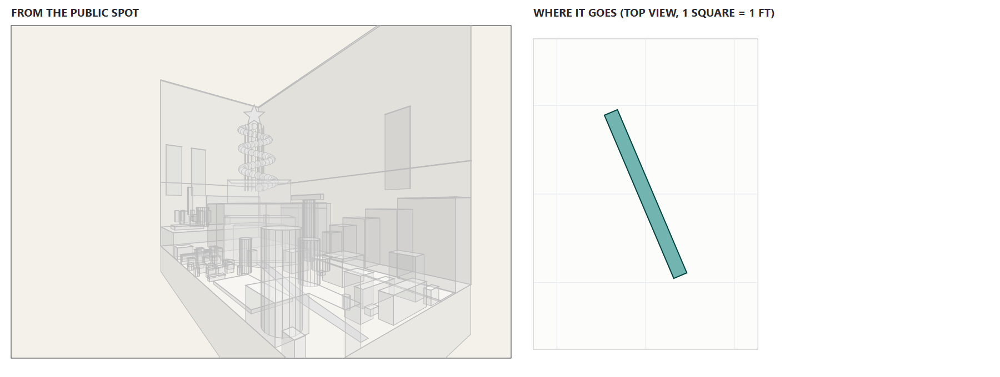

Crib 2026 · That Night in Bethlehem · crew pack
Opens 24 December 2026 · stage 9 ft wide × 16 ft deep · 13 blocks (A, B, C, E to N; there is no D, the rock hill is part of B)


The finished crib from the public spot and from directly above. Generated pictures: build to the blueprints on pages 2 and 3 of your block.
Who builds what, and when
| Block | Name | Build window | Team |
|---|
| A | Two-layer stage | 20 Nov – 5 Dec | Stage team: Vk, Samuel |
| B | Cave, rock hill and Holy Family | 23 Nov – 14 Dec | Team 4: Janet, Mithul, Yugesh, Stephen, Alvin |
| C | House with upper room | 30 Nov – 14 Dec | Team 2: Lenin, Runo, Aarthi, Milton, Monus |
| E | Shepherds' field | 26 Nov – 11 Dec | Team 1: Rufus, Sanjeetha, Andrew, Samuel |
| F | Pipe-cleaner angel choir | 1–14 Dec | Team 3: Austin Joel, Richard, Allwyn (with helpers for the craft) |
| G | Village street | 30 Nov – 17 Dec | Team 5: Jino, Shibi, Suja, Adrian, Deric, Vk |
| H | Lights (one plug, one box) | 23 Nov – 22 Dec | Team 3: Austin Joel, Richard, Allwyn |
| I | Star and cloud spiral | 30 Nov – 21 Dec | Team 3: Austin Joel, Richard, Allwyn |
| J | Backdrop | 20 Nov – 17 Dec | Team 3: Austin Joel, Richard, Allwyn |
| K | Far village and Magi caravan | 10–17 Dec | Team 4: Janet, Mithul, Yugesh, Stephen, Alvin |
| L | Foreground and view spot | 19–23 Dec | Stage team: Vk, Samuel |
| M | Selfie mirror (church floor) | 11–20 Dec | Stage team: Vk, Samuel |
| N | Foreground: rocks, pond, shepherd boy, front wall | 7–20 Dec | Team 2: Lenin, Runo, Aarthi, Milton, Monus |
How to use this pack
- Find your block letter.
- Page 1: what it looks like and a prompt for a picture of the finished block.
- Page 2: the blueprint drawing. Page 3: every numbered part with its exact size and place, and the cut list. Page 4: the steps, in order. Pages 5 onward: every object one by one, with its size, materials (reuse first) and simple steps anyone can follow alone. Tick "done when" and hand over.
The whole crib: front, side and top, plus the view from the public spot
Feet. Stage 9 ft wide at the front × 16 ft deep. Letters are the block letters.
Check on site first
☐ The church socket right behind the stage (back-left corner): exact spot and circuit rating☐ Deck height (2 ft assumed), size, level, and whether you may screw into it☐ Ceiling height (about 15 ft assumed) and ceiling type☐ Altar centred on the front wall; crib at its right end☐ Exit and the deck load rating☐ Work-at-height rules for hanging block I☐ How much 2023 plywood still existsA
Two-layer stage
12 second layer (the upper level); the rented deck stays as the lower level
Page 1 of 6 · what it is
How it looks from the public spot, and where it goes

Size and place: Lower level: the rented deck, flat, 9 ft wide × 16 ft long, 2 ft above the church floor. Upper level: a plywood box 9 ft wide × 4.5 ft deep × 1.5 ft high against the back wall (the step starts 11.5 ft from the front). Black skirting on the front and the left side. Build: 20 Nov – 5 Dec (20–22 Nov: measure on site and buy wood (week 1). 23 Nov – 5 Dec: build in the workshop and fit on the deck.) Team: Stage team: Vk, Samuel
In short
- On site: measure the real deck (2 ft high assumed, free 9 × 16 ft, level) and ask the stage supplier whether you may...
- Workshop: build two frames 4.5 ft × 4.5 ft from 2 × 2 in battens, fixed with screws (not glue), with cross battens...
- Skin each frame: top 12 mm plywood, front and end faces 9 mm. Make the step face 9 ft long × 1.5 ft high; it will be...
- Cut the three hatch lids (sizes in the cut list) and leave them loose, labelled A, B, C.
- Place the two frames against the back wall on the deck, side by side, and tie them together. The front faces line up...
You need
- Plywood 9–12 mm, 8 × 4 ft (3 sheets)
- Pine battens 2 × 2 in (~90 ft)
- Screws, brackets, clamps, wood glue (lot)
- Black pleated skirting + Velcro (25 ft run × 2 ft)
- Fire-retardant spray (all cloth, thermocol, cotton) (4 L)
- Hatch lids, hinges, floor markers (lot)
Done when
- Both boxes are rigid: two people can stand on any part without flex.
- Hatch lids A, B and C open easily and are labelled.
- Skirting hides the open front and left side down to the floor.
Prompt to generate the end result
Stage: 9 ft wide at the SHORT front, 16 ft DEEP along the long left side (do not swap). Attached: (1) the final photo of the whole crib, to match its look and materials; (2) a picture of ONE block, to match its shape and place. Create ONE real-looking phone photograph of just this block as built, seen from the front-left at a three-quarter angle, turned about 33 degrees as in the attached picture, on a plain light-grey background with soft warm light. BLOCK A, Two-layer stage: Two flat plywood levels, 9 ft WIDE across the front and 16 ft LONG: the front 11.5 ft is flat at deck height (2 ft above the church floor), and across the back 4.5 ft, the full 9 ft width, a second level is raised 1.5 ft. The step is a plain vertical plywood face running straight across the full width. Black pleated skirting hangs only on the front and the left side; the back and right sides touch the church walls. Three small loose plywood hatch lids marked A, B and C. No ramp, no terraces, no stairs. Materials: bare 9-12 mm plywood, 2x2 pine battens, black pleated skirting, screw heads, hatch lids marked in black marker. Real physical handmade model, not CGI, not an illustration. No Christmas tree, no snow, no text. Palette: lamp gold, warm white, Mary blue, midnight blue, dusk violet, mist blue, limestone, sand, ochre, olive; no red, bright green or pink. 16:9.
A
Two-layer stage
Blueprint with exact measurements
Page 2 of 6 · the drawing
Feet. x is measured from the LEFT edge of the stage, y from the BACK wall. Heights are above the deck. Numbers match the parts table on the next page.
A
Two-layer stage
Every part: size and place
Page 3 of 6 · the numbers
Parts table (x from the LEFT edge, y from the BACK wall, heights above the deck)
| No. | Part | Size | Where | Sits at |
|---|
| 1 | Upper layer: two plywood boxes U1 and U2 | each 4.5 ft × 4.5 ft × 1.5 ft high, side by side = 9 ft wide × 4.5 ft deep × 1.5 ft high | U1: x 0–4.5, y 0–4.5; U2: x 4.5–9, y 0–4.5 (against the back wall) | on the deck |
| 2 | Step face | 9 ft long × 1.5 ft high plywood face along the front of the boxes; faced with dry-stone by block E | y 4.5 (11.5 ft from the front), x 0–9 | on the deck |
| 3 | Lower layer = the rented deck | flat, 9 ft wide × 11.5 ft deep in front of the step (the deck itself is 16 ft long and 2 ft above the church floor) | x 0–9, y 4.5–16 | 0 ft (deck level) |
| 4 | Hatch lid A (distribution box) | 1.2 ft × 0.8 ft, loose plywood lid | x 0–1.2, y 0.2–1.0 | flush with the top of the upper layer (+1.5 ft) |
| 5 | Hatch lid B (field junction) | 1 ft × 0.8 ft, loose plywood lid | x 1.0–2.0, y 3.6–4.4 | flush with the top of the upper layer (+1.5 ft) |
| 6 | Hatch lid C (speaker) | 1 ft × 1 ft, loose plywood lid | x 0–1, y 15–16 | flush with the deck |
| 7 | Skirting, black pleated | 25 ft run (9 ft front + 16 ft left), 2 ft drop, Velcro | front edge and left edge | hangs to the church floor |
Cut and make list (exact sizes)
| Upper layer | plywood box 9 ft wide × 4.5 ft deep × 1.5 ft high against the back wall, built as two boxes each 4.5 ft × 4.5 ft × 1.5 ft side by side (the step is 11.5 ft from the front) |
| Frame | 2 × 2 in battens: 4 sides per box plus cross battens at 1.5 ft centres both ways; about 90 ft in total |
| Skin | plywood 9–12 mm: top 9 × 4.5 ft, step face 9 × 1.5 ft, two ends 4.5 × 1.5 ft; 3 sheets of 8 × 4 ft |
| Lower layer | the rented deck stays as it is: flat, 2 ft above the floor; nothing is built on it except the other blocks |
| Hatch lids (loose plywood) | A: 1.2 × 0.8 ft at x 0–1.2, y 0.2–1.0 (light box) · B: 1 × 0.8 ft at x 1.0–2.0, y 3.6–4.4 (field junction) · C: 1 × 1 ft at x 0–1, y 15–16 (speaker) |
| Skirting, black pleated | 25 ft run (9 ft front + 16 ft left), 2 ft drop, fixed with Velcro |
A
Two-layer stage
Exact build: do this, in this order
Page 4 of 6 · build it
Do exactly this
- On site: measure the real deck (2 ft high assumed, free 9 × 16 ft, level) and ask the stage supplier whether you may screw into it. If not, clamp the boxes to the deck edge and weigh them down. Mark the 9 × 16 ft rectangle with tape and the step line 11.5 ft from the front.
- Workshop: build two frames 4.5 ft × 4.5 ft from 2 × 2 in battens, fixed with screws (not glue), with cross battens at 1.5 ft centres both ways. Number each frame in marker.
- Skin each frame: top 12 mm plywood, front and end faces 9 mm. Make the step face 9 ft long × 1.5 ft high; it will be faced with dry-stone by block E.
- Cut the three hatch lids (sizes in the cut list) and leave them loose, labelled A, B, C.
- Place the two frames against the back wall on the deck, side by side, and tie them together. The front faces line up in one straight step across the full 9 ft.
- Fix the black skirting with Velcro along the front edge (9 ft) and the left edge (16 ft), 2 ft drop, down to the floor.
- Spray all cloth and any thermocol with fire retardant (4 L in total).
- Check: two people on any part without flex, the step is 1.5 ft high all along, and every piece passes through the church door.
Before you start
- Measure the real deck: height (2 ft assumed), size, level, and whether you may screw into it. If not, clamp and weigh the boxes down.
- Mark the 9 × 16 ft grid and the step line 11.5 ft from the front with tape.
Materials to get
Plywood 9–12 mm, 8 × 4 ft (3 sheets), Pine battens 2 × 2 in (~90 ft), Screws, brackets, clamps, wood glue (lot), Black pleated skirting + Velcro (25 ft run × 2 ft), Fire-retardant spray (all cloth, thermocol, cotton) (4 L), Hatch lids, hinges, floor markers (lot)
Tools: Saw, drill, screw gun, spirit level, tape measure, staple gun
Done when (tick each)
- Both boxes are rigid: two people can stand on any part without flex.
- Hatch lids A, B and C open easily and are labelled.
- Skirting hides the open front and left side down to the floor.
- Every piece passes through the church door.
Hands over to
Everything stands on A. B, C, E, F, G, K, L and M go on after A is placed; H uses the hatches.A
Two-layer stage
Every object, one by one: size, materials, how to make it
Page 5 of 6 · objects
1. Upper box U1 (left) and U2 (right): make 2 the same
Box: 4.5 ft (54 in) W × 4.5 ft (54 in) D × 1.5 ft (18 in) H
Size and place: 4.5 ft × 4.5 ft × 1.5 ft high each. U1 at x 0–4.5, U2 at x 4.5–9, both y 0–4.5 against the back wall.
Materials: 2 × 2 in pine battens (about 45 ft per box), 12 mm plywood top 4.5 × 4.5 ft, 2½ in screws, wood glue only on the top.
Reuse: Reuse 2023 plywood and battens first. Screw, do not nail, so the boxes come apart and are used again next year.
How to make it:
- Cut 4 battens 4.5 ft and 4 battens 4.2 ft; screw them into two square rings 4.5 × 4.5 ft (top ring and bottom ring).
- Cut 9 legs 1.5 ft minus 12 mm (17½ in). Screw one in each corner, one mid-side and one in the centre, between the two rings.
- Add cross battens across the top ring every 1.5 ft both ways, so no unsupported span is wider than 1.5 ft.
- Screw the 12 mm top on with a screw every 6 in around the edge and along every batten.
- Write U1 or U2 and an arrow "FRONT" on the inside in marker.
- Test: stand on every corner and the middle. No flex, no rocking.
2. Step face and end faces
Box: 9 ft (108 in) W × 0.06 ft (1 in) D × 1.5 ft (18 in) H
Size and place: Step face 9 ft long × 1.5 ft high along y 4.5 (11.5 ft from the front). Left end face 4.5 × 1.5 ft at x 0.
Materials: 9 mm plywood: one piece 8 ft × 1.5 ft + one piece 1 ft × 1.5 ft for the step; one piece 4.5 × 1.5 ft for the left end.
Reuse: Offcuts from the 2023 sheets are fine; joins are hidden by the stone facing (block E).
How to make it:
- Cut the pieces with a straight saw line; mark the join 8 ft from the left.
- Screw the step face to the front battens of U1 and U2 with a screw every 8 in.
- Screw the left end face to U1 (the right end is against the church wall; no face needed).
- Check the face is straight along the full 9 ft with a string line.
3. Hatch lids A, B, C
Box: 1.2 ft (14 in) W × 0.8 ft (10 in) D × 0.05 ft (1 in) H
Size and place: A 1.2 × 0.8 ft at x 0–1.2, y 0.2–1.0 (light box) · B 1 × 0.8 ft at x 1.0–2.0, y 3.6–4.4 (field junction) · C 1 × 1 ft at x 0–1, y 15–16 on the deck (speaker).
Materials: 12 mm plywood offcuts, 1 × 1 in pine strip for a lip, finger hole.
Reuse: Lids are loose, so they come out and are reused as they are.
How to make it:
- Cut the openings in the U1 top for A and B before fitting the top (or with a jigsaw after).
- Cut each lid 2 mm smaller than its opening all round.
- Screw 1 × 1 in strips under the opening edges so the lid rests flush with the top.
- Drill a 1 in finger hole in each lid and write A, B or C on it.
- Lid C sits on the deck at the front-left corner over the speaker; just mark its place with tape.
A
Two-layer stage
Every object, one by one: size, materials, how to make it
Page 6 of 6 · objects
4. Black skirting
Box: 25 ft (300 in) W × 0.1 ft (1 in) D × 2 ft (24 in) H
Size and place: 25 ft run: 9 ft along the front edge + 16 ft along the left edge; 2 ft drop to the church floor.
Materials: Black pleated cloth 25 ft × 2 ft, sew-on Velcro 25 ft + stick-on Velcro 25 ft, fire-retardant spray.
Reuse: Reuse the 2023 skirting if it is long enough; Velcro lets it come off clean from the rented deck.
How to make it:
- Stick the hook Velcro along the deck edge, 1 in below the top, after wiping it clean.
- Sew the loop Velcro to the top hem of the skirting.
- Spray the cloth with fire retardant and let it dry.
- Press it on from the back-left corner, round the front-left corner, to the front-right corner.
- Check the bottom just touches the floor and nothing shows under it.
5. Floor grid and step line
Box: 9 ft (108 in) W × 16 ft (192 in) D
Size and place: The 9 × 16 ft rectangle and a line at 11.5 ft from the front (the step).
Materials: Masking tape, measuring tape 5 m, marker.
Reuse: Nothing to buy.
How to make it:
- Measure the real deck: height (2 ft assumed), size, level, and ask whether you may screw into it.
- Tape lines every 1 ft along the left and front edges and write the numbers (x 0–9, y 0–16).
- Tape the step line straight across at y 4.5 (11.5 ft from the front).
- If you may not screw into the deck: clamp U1 and U2 to the deck edge and put 2 sandbags inside each box.
B
Cave, rock hill and Holy Family
2 cave, 3 Holy Family with ox, donkey and manger, 5 rock hill
Page 1 of 7 · what it is
How it looks from the public spot, and where it goes

Size and place: One unit about 7 × 6 ft, 3.3 ft high, on the lower level with its back against the step. Cave 4 × 2.5 ft at floor level, turned 33° so the 3 ft wide mouth faces the public spot V; arch 2.5 ft high, centre x 4.4, y 7.4. Hill top and house floor at +3.3 ft. Figures 2 ft (hero scale 1:3), ox and donkey about 1 ft. Build: 23 Nov – 14 Dec Team: Team 4: Janet, Mithul, Yugesh, Stephen, Alvin
In short
- Make a cardboard mock-up of the arch (3 ft wide × 2.5 ft high) and the cave plan (4 × 2.5 ft). STACK (cave, hill,...
- Cut the plywood base and glue 4 in thermocol layers to the hill outline (see the top view) up to 3.3 ft, sealing...
- Mark the cave with its centre at x 4.4 ft, y 7.4 ft, turned 33°. Cut the 4 × 2.5 ft inside with the hot knife and...
- Carve horizontal strata and cracks on the outside; keep the back of the hill against the step.
- Mesh the arch and overhangs. Coat with plaster of Paris + PVA, 3 mm thick; press on sand/grout, real pebbles and dry...
You need
- Thermocol 4 in, 8 × 4 ft (9 sheets)
- Plaster of Paris 25 kg (4 bags)
- Wall putty / tile grout + sand (3 bags)
- PVA glue (5 L)
- Emulsion / acrylic earth colours + brushes (8 L)
- Chicken mesh + binding wire (lot)
- Straw, dry grass tufts (lot)
Done when
- Rock reaches +3.3 ft and about 10 in of rock sits above the arch.
- From V the manger and baby are visible and not hidden by the arch.
- Every piece fits through the church door.
Prompt to generate the end result
Stage: 9 ft wide at the SHORT front, 16 ft DEEP along the long left side (do not swap). Attached: (1) the final photo of the whole crib, to match its look and materials; (2) a picture of ONE block, to match its shape and place. Create ONE real-looking phone photograph of just this block as built, seen from the front-left at a three-quarter angle, turned about 33 degrees as in the attached picture, on a plain light-grey background with soft warm light. BLOCK B, Cave, rock hill and Holy Family: A rugged limestone rock hill 3.3 ft high with horizontal strata, cracks and moss, standing on the flat lower level with its back against the step. A rough cave at floor level: a rounded arch about 3 ft wide and 2.5 ft high, mouth turned 33 degrees toward the viewer, warm gold glow inside, about 10 inches of rock above the arch. In the cave: a carved stone manger with straw, Mary in blue and cream, Joseph in ochre holding a small lantern, baby Jesus in warm white, an ox and a donkey (2 ft hero figures). Flat top on the hill for the house. Size and place: One unit about 7 × 6 ft, 3.3 ft high, on the lower level with its back against the step. Cave 4 × 2.5 ft at floor level, turned 33° so the 3 ft wide mouth faces the public spot V; arch 2.5 ft high, centre x 4.4, y 7.4. Hill top and house floor at +3.3 ft. Figures 2 ft (hero scale 1:3), ox and donkey about 1 ft. Materials: carved thermocol coated in plaster, sand and grout with real pebbles, dry-brushed sand then ochre then olive, near-black cave interior, straw, clay, cloth. Real physical handmade model, not CGI, not an illustration. No Christmas tree, no snow, no text. Palette: lamp gold, warm white, Mary blue, midnight blue, dusk violet, mist blue, limestone, sand, ochre, olive; no red, bright green or pink. 16:9.
B
Cave, rock hill and Holy Family
Blueprint with exact measurements
Page 2 of 7 · the drawing
Feet. x is measured from the LEFT edge of the stage, y from the BACK wall. Heights are above the deck. Numbers match the parts table on the next page.
B
Cave, rock hill and Holy Family
Every part: size and place
Page 3 of 7 · the numbers
Parts table (x from the LEFT edge, y from the BACK wall, heights above the deck)
| No. | Part | Size | Where | Sits at |
|---|
| 1 | rock hill | about 7 ft × 6 ft base (irregular, see top view), up to 3.3 ft high; keep 1 ft free behind for cables | 2.0–9.0 ft from the left edge; 1.7–9.9 ft from the back wall | see stack note |
| 2 | cave | 4 ft (48 in) × 2.5 ft (30 in) × 2.5 ft (30 in) high, arch 2.5 ft high; turned 33° toward V | 2.0–6.8 ft from the left edge; 5.3–9.5 ft from the back wall | see stack note |
| 3 | Holy Family | 3 ft (36 in) × 1.2 ft (14 in) × 2 ft (24 in) high; turned 33° toward V | 2.7–5.9 ft from the left edge; 6.2–8.8 ft from the back wall | see stack note |
STACK (cave, hill, house): the cave floor is at deck level and the arch is 2.5 ft high. The hill top and the house floor are at +3.3 ft, so about 10 in of rock sits above the arch. The room is 1.5 ft high, so its roof is at +4.8 ft. Make a cardboard mock-up of cave + house first and look at it from the public spot before cutting the hill or the wood.
Cut and make list (exact sizes)
| Thermocol 4 in | 9 sheets of 8 × 4 ft, glued in layers up to 3.3 ft (about 10 layers at the highest point) |
| Hill | about 7 ft × 6 ft base, 3.3 ft high, on the lower level with its back against the step; keep 1 ft free behind for cables |
| Cave inside | 4 ft long × 2.5 ft deep, arch 3 ft wide × 2.5 ft high at floor level; centre x 4.4 ft, y 7.4 ft; turned 33° so the mouth faces the public spot V |
| Plywood base 12 mm | 2 sheets, 7 × 6 ft in pieces no wider than 4 ft |
| Figures (hero scale 1:3) | Mary, Joseph, baby about 2 ft for a standing figure; Holy Family group 3 ft × 1.2 ft; ox and donkey about 1 ft |
| Manger | thermocol + plaster, about 1 ft long, with a clay lamp |
| Light points | holes for 2 warm COB lights (above the arch and behind the manger), the manger spot and the cross-shadow lamp; 1 ft cable tail at each (block H fits the lights) |
B
Cave, rock hill and Holy Family
Exact build: do this, in this order
Page 4 of 7 · build it
Do exactly this
- Make a cardboard mock-up of the arch (3 ft wide × 2.5 ft high) and the cave plan (4 × 2.5 ft). STACK (cave, hill, house): the cave floor is at deck level and the arch is 2.5 ft high. The hill top and the house floor are at +3.3 ft, so about 10 in of rock sits above the arch. The room is 1.5 ft high, so its roof is at +4.8 ft. Make a cardboard mock-up of cave + house first and look at it from the public spot before cutting the hill or the wood.
- Cut the plywood base and glue 4 in thermocol layers to the hill outline (see the top view) up to 3.3 ft, sealing every layer with PVA. Keep 1 ft free behind for cables.
- Mark the cave with its centre at x 4.4 ft, y 7.4 ft, turned 33°. Cut the 4 × 2.5 ft inside with the hot knife and the arch to the template, leaving about 10 in of rock above the arch.
- Carve horizontal strata and cracks on the outside; keep the back of the hill against the step.
- Mesh the arch and overhangs. Coat with plaster of Paris + PVA, 3 mm thick; press on sand/grout, real pebbles and dry grass while wet.
- Dry-brush sand, then ochre, then olive; darker in the cracks. Paint the cave inside near-black; keep the rock around the cave one shade darker so the gold glows.
- Cut the light holes and leave a 1 ft cable tail at each. Make the manger and the clay lamp, lay straw, then place Mary, Joseph, baby, ox and donkey last (group about 3 × 1.2 ft).
- Split the unit into numbered pieces, none wider than 4 ft, and check each passes the church door.
Before you start
- Wear a mask for plaster dust; cut thermocol outdoors; fire-retardant spray every cut surface.
- Decide: buy new 2 ft figures or reuse and repaint the 2023 set.
- Make a cardboard mock-up of cave + house first (see the stack note).
Materials to get
Thermocol 4 in, 8 × 4 ft (9 sheets), Plaster of Paris 25 kg (4 bags), Wall putty / tile grout + sand (3 bags), PVA glue (5 L), Emulsion / acrylic earth colours + brushes (8 L), Chicken mesh + binding wire (lot), Straw, dry grass tufts (lot), Plywood 12 mm base, 8 × 4 ft (2 sheets), Holy Family, 2 ft figures: Mary, Joseph, baby (set of 3), Ox and donkey, about 1 ft (2), Manger (thermocol + plaster) + clay lamp (1)
Tools: Hot-wire cutter, hot knife, trowel, mesh cutters, glue gun, brushes, sculpting clay, dust mask
Done when (tick each)
- Rock reaches +3.3 ft and about 10 in of rock sits above the arch.
- From V the manger and baby are visible and not hidden by the arch.
- Every piece fits through the church door.
- Holes and 1 ft cable tails are left for the cave lights (block H fits them).
Hands over to
C (house) rests on the hill top. E (field) and K (far village) sit beside it. H fits the cave and manger lights.B
Cave, rock hill and Holy Family
Every object, one by one: size, materials, how to make it
Page 5 of 7 · objects
1. Plywood base for the hill
Box: 7 ft (84 in) W × 8.2 ft (98 in) D × 0.05 ft (1 in) H
Size and place: About 7 × 6 ft in pieces no wider than 4 ft, x 2.0–9.0, y 1.7–9.9 (irregular, see the top view).
Materials: 12 mm plywood, 2 sheets.
Reuse: Reuse 2023 plywood. Number the pieces so the hill comes apart and goes back together next year.
How to make it:
- Draw the hill outline on the deck with chalk from the top view.
- Cut the base in 2–3 pieces along straight lines, none wider than 4 ft.
- Number each piece B1, B2, B3 underneath.
- Cut a 4 × 2.5 ft notch where the cave floor goes; the cave floor is the deck itself.
2. Rock hill
Box: 7 ft (84 in) W × 8.2 ft (98 in) D × 3.3 ft (40 in) H
Size and place: About 7 × 6 ft base, up to 3.3 ft high, back against the step; keep 1 ft free behind for cables.
Materials: Thermocol 4 in (9 sheets), PVA glue, chicken mesh, plaster of Paris, grout + sand, pebbles, earth paints.
Reuse: Make it in the numbered pieces of the base so it can be stored and reused next year.
How to make it:
- Cut thermocol layers to the outline, each layer about 2 in smaller than the one below; glue with PVA.
- Build up about 10 layers to 3.3 ft at the highest point (the house sits on top).
- Make the top flat over a 4 × 2 ft area for the house (block C).
- Carve horizontal strata and cracks with a hot knife; round the layer steps.
- Pin chicken mesh over overhangs; coat everything with PoP + PVA 3 mm thick and press on grout, sand and pebbles.
- Dry-brush sand, then ochre, then olive; darker in cracks.
3. Cave
Box: 4 ft (48 in) W × 2.5 ft (30 in) D × 2.5 ft (30 in) H
Size and place: Inside 4 ft long × 2.5 ft deep, arch 3 ft wide × 2.5 ft high at deck level; centre x 4.4, y 7.4; turned 33° toward V; about 10 in of rock above the arch.
Materials: Cardboard for the template, the hill thermocol, PoP, near-black paint.
Reuse: Keep the cardboard arch template for next year.
How to make it:
- Cut a cardboard arch template 3 ft wide × 2.5 ft high with a rounded top.
- Mark the cave centre on the deck (x 4.4, y 7.4) and draw the 4 × 2.5 ft floor turned 33° toward V.
- Cut the inside out of the thermocol layers with a hot knife; follow the template at the mouth.
- Check about 10 in of rock remains above the arch.
- Plaster inside, then paint near-black; rock around the mouth one shade darker than the hill.
- Drill holes for the 2 cave lights (above the arch, behind the manger), the manger spot and the cross-shadow lamp; leave 1 ft cable tails.
B
Cave, rock hill and Holy Family
Every object, one by one: size, materials, how to make it
Page 6 of 7 · objects
4. Manger
Box: 1 ft (12 in) W × 0.5 ft (6 in) D × 0.5 ft (6 in) H
Size and place: About 1 ft long × 6 in wide × 6 in high, in the cave between Mary and Joseph.
Materials: Wood offcuts (or thermocol) + PoP, straw.
Reuse: Wood manger lasts many years; reuse the 2023 one if you have it.
How to make it:
- Cut two 1 ft × 6 in sides and two 6 × 6 in ends; screw into a box that is wider at the top.
- Add 4 short legs 2 in long.
- Coat with a thin layer of PoP for a stone look; paint limestone and dry-brush sand.
- Fill with straw so it hangs over the edges.
5. Clay lamp
Box: 0.25 ft (3 in) W × 0.15 ft (2 in) D × 0.1 ft (1 in) H
Size and place: About 3 in long, on a ledge inside the cave.
Materials: Air-dry clay, ochre paint.
Reuse: Keep it for next year.
How to make it:
- Shape a small oval bowl with a pinched spout.
- Let it dry 2 days; paint ochre.
- Place it on a rock ledge; the warm cave light makes it glow.
6. Mary, Joseph, baby Jesus
Box: 3 ft (36 in) W × 1.2 ft (14 in) D × 2 ft (24 in) H
Size and place: Hero scale 1:3: standing figures about 2 ft tall; group about 3 ft × 1.2 ft at x 2.7–5.9, y 6.2–8.8, turned 33° toward V.
Materials: Reuse the 2023 figures and repaint; Mary blue #3A5BA8 and cream, Joseph ochre, baby warm white.
Reuse: Reuse first; repaint only the cloth, not the faces.
How to make it:
- Check the 2023 figures: clean, fix chips with putty, repaint cloth in the palette colours.
- Mary kneels left of the manger, Joseph stands right holding a small lantern, baby in the manger.
- Set them last, after the cave is painted and dry.
- Look from V: the baby must be visible and not hidden by the arch.
B
Cave, rock hill and Holy Family
Every object, one by one: size, materials, how to make it
Page 7 of 7 · objects
7. Ox and donkey
Box: 1.5 ft (18 in) W × 0.8 ft (10 in) D × 1 ft (12 in) H
Size and place: About 1 ft tall each, behind the manger at the back of the cave.
Materials: Reuse 2023 animals, or buy; earth colours only.
Reuse: Reuse first.
How to make it:
- Clean and touch up the paint (ox sand-ochre, donkey grey-brown).
- Place them at the back of the cave, heads toward the manger.
- Lay straw around their feet.
C
House with upper room
4 house with the upper guest room (kataluma), cut open
Page 1 of 7 · what it is
How it looks from the public spot, and where it goes

Size and place: 4 × 2 ft room, floor at +3.3 ft on the hill top, room height 1.5 ft, roof at +4.8 ft. Turned 33° toward V. Outside stair of 8 steps rising 3.3 ft. Build: 30 Nov – 14 Dec Team: Team 2: Lenin, Runo, Aarthi, Milton, Monus
In short
- Check the cave arch (2.5 ft) and the +3.3 ft hill top with the mock-up (see block B). STACK (cave, hill, house): the...
- Cut the 9 mm plywood floor tray 4 × 2 ft and screw 1 × 1 in strips under its edges. It rests on the hill top at +3.3...
- Cut the walls from 4 mm plywood: back wall 4 ft × 1.5 ft, side walls 2 ft × 1.5 ft. Glue and screw them to the tray...
- Cut the roof slab 4 × 2 ft from 4 mm plywood, add a 3 in parapet strip on three sides and screw it on (no glue, so...
- Fill screw heads and joints with wall putty, then brush on putty mixed with fine sand for a stone texture;...
You need
- Plywood 4 mm, 8 × 4 ft (walls, roof) (1 sheet)
- Plywood 9 mm floor tray, 4 × 2 ft + 2 × 2 in posts (1 set)
- Pine strip 1 × 1 in (corners) + screws, wood glue (~20 ft)
- Wall putty + sand (texture) + whitewash paint (1 bag + 1 L)
- Sleeping travellers 1:6 (clay + cloth, or bought) (6)
- Props: jars, baskets, mats, blankets (lot)
- Balsa / bamboo for beams, door (lot)
Done when
- Plywood room, screwed (not glued), weighs under 12 kg and sits on the two posts and the hill top.
- Hidden details placed: cat on the roof, clay oven, sleeping child.
- Three small holes with 1 ft cable tails are left for the room lamps (block H fits them).
Prompt to generate the end result
Stage: 9 ft wide at the SHORT front, 16 ft DEEP along the long left side (do not swap). Attached: (1) the final photo of the whole crib, to match its look and materials; (2) a picture of ONE block, to match its shape and place. Create ONE real-looking phone photograph of just this block as built, seen from the front-left at a three-quarter angle, turned about 33 degrees as in the attached picture, on a plain light-grey background with soft warm light. BLOCK C, House with upper room: A whitewashed stone guest room with a flat plastered roof (no white frosting, no snow) and a low parapet, open front cut away to show sleeping travellers, clay jars and three small warm lamps, a stone outside stair of 8 steps, a cat on the roof. It sits on top of the hill, its floor 3.3 ft above the deck. Size and place: 4 × 2 ft room, floor at +3.3 ft on the hill top, room height 1.5 ft, roof at +4.8 ft. Turned 33° toward V. Outside stair of 8 steps rising 3.3 ft. Materials: limestone-coloured plywood walls with a putty texture and whitewash, terracotta jars, woven mats, wool blankets, wooden lintels. Real physical handmade model, not CGI, not an illustration. No Christmas tree, no snow, no text. Palette: lamp gold, warm white, Mary blue, midnight blue, dusk violet, mist blue, limestone, sand, ochre, olive; no red, bright green or pink. 16:9.
C
House with upper room
Blueprint with exact measurements
Page 2 of 7 · the drawing
Feet. x is measured from the LEFT edge of the stage, y from the BACK wall. Heights are above the deck. Numbers match the parts table on the next page.
C
House with upper room
Every part: size and place
Page 3 of 7 · the numbers
Parts table (x from the LEFT edge, y from the BACK wall, heights above the deck)
| No. | Part | Size | Where | Sits at |
|---|
| 1 | guest room | 4 ft (48 in) × 2 ft (24 in) × 1.5 ft (18 in) high; turned 33° toward V | 3.0–7.4 ft from the left edge; 4.2–8.1 ft from the back wall | see stack note |
STACK (cave, hill, house): the cave floor is at deck level and the arch is 2.5 ft high. The hill top and the house floor are at +3.3 ft, so about 10 in of rock sits above the arch. The room is 1.5 ft high, so its roof is at +4.8 ft. Make a cardboard mock-up of cave + house first and look at it from the public spot before cutting the hill or the wood.
Cut and make list (exact sizes)
| Floor tray, plywood 9 mm | 4 ft × 2 ft; 1 × 1 in pine strip screwed under all four edges |
| Back wall, plywood 4 mm | 4 ft long × 1.5 ft high |
| Side walls, plywood 4 mm | 2 pieces, 2 ft × 1.5 ft high; the front is left open |
| Corner strips, pine 1 × 1 in | 4 pieces, 1.5 ft long, inside each corner; walls are glued and screwed to them |
| Roof slab, plywood 4 mm | 4 ft × 2 ft, with a parapet of 1 × 3 in pine strip around three sides; roof at +4.8 ft |
| Posts 2 × 2 in | 2 posts, 3.3 ft (40 in) minus 9 mm, standing on the cave base (not on the cave roof) |
| Outside stair | 8 wood blocks from offcuts, each 5 in high, 6 in deep, 1 ft wide, stacked and screwed; total rise 3.3 ft (40 in) |
| Light points | 3 holes of 10 mm in the roof slab with a 1 ft cable tail each (block H fits the lamps) |
| Dressing | 6 sleeping travellers 1:6 (about 1 ft long), jars, mats, blankets; cat on the roof, clay oven, sleeping child |
C
House with upper room
Exact build: do this, in this order
Page 4 of 7 · build it
Do exactly this
- Check the cave arch (2.5 ft) and the +3.3 ft hill top with the mock-up (see block B). STACK (cave, hill, house): the cave floor is at deck level and the arch is 2.5 ft high. The hill top and the house floor are at +3.3 ft, so about 10 in of rock sits above the arch. The room is 1.5 ft high, so its roof is at +4.8 ft. Make a cardboard mock-up of cave + house first and look at it from the public spot before cutting the hill or the wood.
- Cut the 9 mm plywood floor tray 4 × 2 ft and screw 1 × 1 in strips under its edges. It rests on the hill top at +3.3 ft and on two 2 × 2 in posts that stand on the cave base; cut the posts so the floor is exactly 3.3 ft above the deck.
- Cut the walls from 4 mm plywood: back wall 4 ft × 1.5 ft, side walls 2 ft × 1.5 ft. Glue and screw them to the tray and to 1 × 1 in corner strips; leave the front open.
- Cut the roof slab 4 × 2 ft from 4 mm plywood, add a 3 in parapet strip on three sides and screw it on (no glue, so it lifts off for the lamps). The whole room must weigh under 12 kg.
- Fill screw heads and joints with wall putty, then brush on putty mixed with fine sand for a stone texture; whitewash; roofs plain flat (no white frosting). Make the 8 stair blocks (5 in rise, 6 in tread) from offcuts.
- Drill the three 10 mm lamp holes in the roof slab and leave a 1 ft cable tail at each.
- Dress the room: mats, blankets, jars, six sleepers. Add the hidden details: cat on the roof, clay oven, sleeping child.
- Check the room lifts off the hill as one piece and passes the church door. After Christmas unscrew the roof and store the room flat for next year.
Before you start
- Take the cave arch height (2.5 ft) and the +3.3 ft hill top from block B.
- Gather six 1:6 sleeping travellers (about 1 ft long) or clay to make them.
Materials to get
Plywood 4 mm, 8 × 4 ft (walls, roof) (1 sheet), Plywood 9 mm floor tray, 4 × 2 ft + 2 × 2 in posts (1 set), Pine strip 1 × 1 in (corners) + screws, wood glue (~20 ft), Wall putty + sand (texture) + whitewash paint (1 bag + 1 L), Sleeping travellers 1:6 (clay + cloth, or bought) (6), Props: jars, baskets, mats, blankets (lot), Balsa / bamboo for beams, door (lot)
Tools: Jigsaw or hand saw, drill + 3 mm bit, screwdriver, sandpaper, putty knife, brushes
Done when (tick each)
- Plywood room, screwed (not glued), weighs under 12 kg and sits on the two posts and the hill top.
- Hidden details placed: cat on the roof, clay oven, sleeping child.
- Three small holes with 1 ft cable tails are left for the room lamps (block H fits them).
- Lifts off the hill as one piece.
Hands over to
Sits on B. H fits the three room lamps through the holes you leave.C
House with upper room
Every object, one by one: size, materials, how to make it
Page 5 of 7 · objects
1. Floor tray
Box: 4 ft (48 in) W × 2 ft (24 in) D × 0.1 ft (1 in) H
Size and place: 4 ft × 2 ft, 9 mm plywood; floor at +3.3 ft; turned 33° toward V on the hill top (x 3.0–7.4, y 4.2–8.1).
Materials: 9 mm plywood 4 × 2 ft, 1 × 1 in pine strip 12 ft, 1 in screws, wood glue.
Reuse: Screwed wood room comes apart and is reused every year.
How to make it:
- Cut the plywood 4 × 2 ft with straight square corners (check the diagonals are equal).
- Screw 1 × 1 in strips under all four edges as a stiff frame.
- Sand the edges smooth.
- Mark the open front side "FRONT (to V)".
2. Two posts
Box: 0.17 ft (2 in) W × 0.17 ft (2 in) D × 3.3 ft (40 in) H
Size and place: 2 × 2 in, each 40 in minus 9 mm (about 39⅝ in); stand on the cave base, not on the cave roof.
Materials: 2 × 2 in pine 7 ft, 2 small L-brackets.
Reuse: Reusable.
How to make it:
- Place the tray on the hill top with the cardboard mock-up first and mark where the posts land on the cave base.
- Cut the posts so the floor is exactly 3.3 ft above the deck.
- Screw each post to the underside frame of the tray with an L-bracket.
- Check with a level: the floor is flat both ways.
3. Back wall and side walls
Box: 4 ft (48 in) W × 2 ft (24 in) D × 1.5 ft (18 in) H
Size and place: Back wall 4 ft × 1.5 ft high; two side walls 2 ft × 1.5 ft high; all 4 mm plywood; front open.
Materials: 4 mm plywood, 4 corner strips 1 × 1 in × 1.5 ft, ¾ in screws, wood glue.
Reuse: Screw everything so it comes apart.
How to make it:
- Cut the three wall pieces; sand the edges.
- Cut a small window 4 × 3 in in the back wall 6 in from one end, 9 in up.
- Glue and screw a corner strip to the inside back corners and the front corners.
- Screw the walls to the tray edge and to the corner strips, a screw every 6 in.
- Check the walls stand square (90°) to the floor.
C
House with upper room
Every object, one by one: size, materials, how to make it
Page 6 of 7 · objects
4. Roof slab with parapet
Box: 4 ft (48 in) W × 2 ft (24 in) D × 0.25 ft (3 in) H
Size and place: 4 ft × 2 ft, 4 mm plywood, at +4.8 ft; parapet 3 in high on the back and two sides.
Materials: 4 mm plywood 4 × 2 ft, 1 × 3 in pine strip 8 ft.
Reuse: Screws only, no glue, so it lifts off for the lamps.
How to make it:
- Cut the slab; drill three 10 mm lamp holes 1 ft apart along the middle.
- Screw the 1 × 3 in parapet strips along the back and both short sides.
- Screw the slab onto the top edge of the walls (4 screws).
- Weigh the whole room: under 12 kg.
5. Stone texture and whitewash
Box: 4 ft (48 in) W × 2 ft (24 in) D × 1.5 ft (18 in) H
Size and place: All outside walls and parapet; roof top plain flat.
Materials: Wall putty + fine sand (1 : 1), whitewash or white emulsion, sand-colour paint, brushes.
Reuse: The texture hides the wood so the room looks like stone for years.
How to make it:
- Fill screw heads and joints with putty; let dry; sand smooth.
- Mix putty with sand and dab it on with a stiff brush for a rough stone look.
- Whitewash; dry-brush sand colour on the edges and low parts.
- Leave the roof plain and flat (no white frosting, no snow).
6. Outside stair
Box: 1 ft (12 in) W × 4 ft (48 in) D × 3.3 ft (40 in) H
Size and place: 8 steps, each 5 in high, 6 in deep, 1 ft wide; total rise 3.3 ft (40 in); runs up the hill side to the room.
Materials: Wood offcuts 5 in thick (or stacked pieces), screws, the same putty texture.
Reuse: Use offcuts only.
How to make it:
- Cut 8 blocks 1 ft wide × 6 in deep × 5 in high from offcuts; stack each block 6 in further back than the one below.
- Screw the blocks together into one staircase piece.
- Texture with putty + sand and paint limestone.
- Press it into the hill side so the top step meets the room floor.
C
House with upper room
Every object, one by one: size, materials, how to make it
Page 7 of 7 · objects
7. Inside dressing and hidden details
Box: 4 ft (48 in) W × 2 ft (24 in) D × 0.5 ft (6 in) H
Size and place: 6 sleeping travellers about 1 ft long (1:6), jars, mats, blankets; cat on the roof, clay oven, sleeping child.
Materials: Clay + cloth scraps, small terracotta jars, jute mat pieces, wool scraps.
Reuse: Reuse 2023 small figures and props.
How to make it:
- Lay mats and blankets on the floor.
- Place the six sleepers along the back wall, heads toward the sides.
- Put jars in the corners and the clay oven near the open front.
- Put the sleeping child near the front and the cat on the roof parapet.
- Check from V: the inside is visible through the open front.
E
Shepherds' field
8 shepherds, sheep and campfire; 11 sheepfold; 13 watchtower; the dry-stone step wall
Page 1 of 8 · what it is
How it looks from the public spot, and where it goes

Size and place: Left side. Lower level: a low terrace wall 1.55 × 0.25 ft, 0.5 ft high (x 0–1.55, y 6.3), 2 standing shepherds 1 ft tall and 1 lying down, 14 sheep spread from y 4.6 to 9.6, a campfire at x 1.0, y 8.3, a black goat-hair tent, boulders, thorn bushes, a stone trough and a fig tree. Upper level behind the step: sheepfold 2 × 1.3 ft (x 0.4–2.4, y 1.75–3.05) and a 1 ft round watchtower 1.5 ft tall at x 3.0, y 1.0. The step face (9 ft × 1.5 ft) is faced as a dry-stone wall. Build: 26 Nov – 11 Dec Team: Team 1: Rufus, Sanjeetha, Andrew, Samuel
In short
- Agree the angel choir place with block F: it stands on the upper level above the sheepfold.
- Face the step: cut three 3 ft × 1.5 ft strips of 2 in thermocol, carve them as dry-stone, glue real pebbles in, and...
- Upper level: build the sheepfold (pebble ring 2.0 × 1.3 ft with a thorn gate) at x 0.4–2.4, y 1.75–3.05 and the...
- Lower level: build the terrace wall 1.55 ft long, 3 in deep, 6 in high at y 6.3 from the left edge, the same way as...
- Cover both terraces with sand and soil, then patches of grass and moss. Paint olive, sand and limestone colours.
You need
- Thermocol 2 in, 8 × 4 ft (step wall, sheepfold base) (2 sheets)
- PoP + grout (1 bag)
- Soil, sand, artificial grass, moss (lot)
- Paint + brushes (3 L)
- Shepherd figures 1 ft (old man, young man + lamb, one lying down) (3)
- Wool sheep (pipe cleaner + wool, made by the team) (14)
- Terrace wall: thermocol 2 in strip + pebbles (1)
Done when
- The step wall is covered in carved dry-stone with real pebbles, 1.5 ft high, full width.
- Shepherds, sheep and fold are paler and cooler than the village (tier B–C).
- Ground between the wall and the hill is sand and soil with grass patches.
Prompt to generate the end result
Stage: 9 ft wide at the SHORT front, 16 ft DEEP along the long left side (do not swap). Attached: (1) the final photo of the whole crib, to match its look and materials; (2) a picture of ONE block, to match its shape and place. Create ONE real-looking phone photograph of just this block as built, seen from the front-left at a three-quarter angle, turned about 33 degrees as in the attached picture, on a plain light-grey background with soft warm light. BLOCK E, Shepherds' field: A shepherds' field on two terraces: a low dry-stone terrace wall splits the lower field; two shepherds 1 ft tall in earth-brown cloaks (one old with a staff, one young holding a lamb) and a third asleep by the wall, fourteen real-wool sheep spread over both terraces, a small campfire, a low black goat-hair tent, scattered boulders and thorn bushes, a stone water trough and a small fig tree; behind them the 1.5 ft step faced as a dry-stone wall running the full width; on the raised level a ring-shaped stone sheepfold with a thorn gate and a small round stone watchtower. Sand and soil ground with grass and moss. Size and place: Left side. Lower level: a low terrace wall 1.55 × 0.25 ft, 0.5 ft high (x 0–1.55, y 6.3), 2 standing shepherds 1 ft tall and 1 lying down, 14 sheep spread from y 4.6 to 9.6, a campfire at x 1.0, y 8.3, a black goat-hair tent, boulders, thorn bushes, a stone trough and a fig tree. Upper level behind the step: sheepfold 2 × 1.3 ft (x 0.4–2.4, y 1.75–3.05) and a 1 ft round watchtower 1.5 ft tall at x 3.0, y 1.0. The step face (9 ft × 1.5 ft) is faced as a dry-stone wall. Materials: thermocol carved as dry-stone walls with real pebbles, sand and soil, artificial grass and moss, cream wool, clay figures. Real physical handmade model, not CGI, not an illustration. No Christmas tree, no snow, no text. Palette: lamp gold, warm white, Mary blue, midnight blue, dusk violet, mist blue, limestone, sand, ochre, olive; no red, bright green or pink. 16:9.
E
Shepherds' field
Blueprint with exact measurements
Page 2 of 8 · the drawing
Feet. x is measured from the LEFT edge of the stage, y from the BACK wall. Heights are above the deck. Numbers match the parts table on the next page.
E
Shepherds' field
Every part: size and place
Page 3 of 8 · the numbers
Parts table (x from the LEFT edge, y from the BACK wall, heights above the deck)
| No. | Part | Size | Where | Sits at |
|---|
| 1 | sheepfold | 2 ft (24 in) × 1.3 ft (16 in) × 3 in high | 0.4–2.4 ft from the left edge; 1.8–3.0 ft from the back wall | 1.5 ft above the deck |
| 2 | watchtower | 1 ft (12 in) × 1 ft (12 in) × 1.5 ft (18 in) high | 2.5–3.5 ft from the left edge; 0.5–1.5 ft from the back wall | 1.5 ft above the deck |
| 3 | shepherd ×2 | figure 1.2 ft (14 in) tall, scale 1:6; stands on a base about 4 in across | 2 places, e.g. 0.5–0.8 ft from the left edge; 7.5–7.8 ft from the back wall; 1.3–1.6 ft from the left edge; 8.0–8.3 ft from the back wall | on the deck |
| 4 | shepherd lying down | 11 in × 4 in × 4 in high | 0.2–1.1 ft from the left edge; 5.6–5.9 ft from the back wall | on the deck |
| 5 | terrace wall | 1.55 ft (19 in) × 3 in × 6 in high | 0.0–1.6 ft from the left edge; 6.3–6.5 ft from the back wall | on the deck |
| 6 | sheep ×14 | about 0.45 ft (5 in) long, 0.4 ft (5 in) tall; real wool | 14 places, e.g. 0.6–0.9 ft from the left edge; 8.7–9.0 ft from the back wall; 1.4–1.8 ft from the left edge; 9.0–9.3 ft from the back wall | on the deck |
| 7 | shepherds tent (goat hair) | 11 in × 9 in × 8 in high | 0.1–1.0 ft from the left edge; 4.6–5.3 ft from the back wall | on the deck |
| 8 | boulder ×3 | 4 in × 4 in × 4 in high | 3 places, e.g. 1.9–2.2 ft from the left edge; 4.8–5.1 ft from the back wall; -0.0–0.3 ft from the left edge; 7.6–7.9 ft from the back wall | on the deck |
| 9 | thorn bush ×3 | canopy about 4 in across, 4 in tall | 3 places, e.g. 1.4–1.7 ft from the left edge; 4.5–4.8 ft from the back wall; -0.0–0.2 ft from the left edge; 8.8–9.0 ft from the back wall | on the deck |
| 10 | stone water trough | 8 in × 3 in × 2 in high | 0.3–1.0 ft from the left edge; 9.8–10.0 ft from the back wall | on the deck |
| 11 | fig tree | canopy about 9 in across, 1.6 ft (19 in) tall | 1.9–2.5 ft from the left edge; 9.2–9.9 ft from the back wall | on the deck |
| 12 | campfire | about 4 in across, 4 in tall, orange flicker LED inside | 0.8–1.1 ft from the left edge; 8.2–8.5 ft from the back wall | on the deck |
Cut and make list (exact sizes)
| Step wall | face the whole step, 9 ft long × 1.5 ft high, with 2 in thermocol carved as dry-stone and real pebbles, in 3 pieces of 3 ft (the hill hides the middle part) |
| Upper level (behind the step) | sheepfold: ring of pebbles 2.0 × 1.3 ft, walls 3 in high, thorn gate, at x 0.4–2.4, y 1.75–3.05 · watchtower: 1 ft across, 1.5 ft tall at x 3.0, y 1.0 (PVC core + pebble clay) |
| Terrace wall (lower level) | 1.55 ft long × 0.25 ft deep × 0.5 ft high at x 0–1.55, y 6.3–6.55: a low dry-stone wall that splits the field into two terraces |
| Shepherds (1:6, 1 ft) | old man with a staff at x 0.5, y 7.5 · young man with a lamb at x 1.3, y 8.0 · one lying down 0.9 × 0.3 ft at x 0.2–1.1, y 5.6–5.9 |
| Sheep ×14 | each about 5 in long, 5 in tall: 6 near the fire (y 8.2–9.6), 3 by the terrace wall (y 6.9–7.4), 5 on the upper terrace (y 4.8–5.9) |
| Campfire | twigs and pebbles about 4 in across at x 1.0, y 8.3 (light fitted by H) |
| Shepherds' tent | black goat-hair tent 0.9 × 0.75 ft, 0.7 ft high, at x 0.05–0.95, y 4.6–5.35, open side facing the field |
| Boulders ×3, thorn bushes ×3 | boulders 0.3 ft across, 0.3 ft high at (2.05, 4.95), (0.15, 7.75), (1.95, 8.0); thorn bushes 0.25 ft across, 0.35 ft high at (1.55, 4.6), (0.1, 8.9), (1.85, 9.75) |
| Stone water trough | 0.7 × 0.22 ft, 0.2 ft high, at x 0.3–1.0, y 9.75 |
| Fig tree | 1.6 ft tall, canopy 0.6 ft across, at x 2.25, y 9.55 |
| Ground | sand and soil with patches of artificial grass and moss on both terraces |
| Light points | campfire (1 hole) and two field floods on small stands behind rocks at x 1.6, y 6.4 and x 2.9, y 8.6 (block H fits them) |
E
Shepherds' field
Exact build: do this, in this order
Page 4 of 8 · build it
Do exactly this
- Agree the angel choir place with block F: it stands on the upper level above the sheepfold.
- Face the step: cut three 3 ft × 1.5 ft strips of 2 in thermocol, carve them as dry-stone, glue real pebbles in, and fix them to the step face.
- Upper level: build the sheepfold (pebble ring 2.0 × 1.3 ft with a thorn gate) at x 0.4–2.4, y 1.75–3.05 and the watchtower at x 3.0, y 1.0, 1 ft across and 1.5 ft tall.
- Lower level: build the terrace wall 1.55 ft long, 3 in deep, 6 in high at y 6.3 from the left edge, the same way as the step wall.
- Cover both terraces with sand and soil, then patches of grass and moss. Paint olive, sand and limestone colours.
- Make the campfire from twigs and pebbles at x 1.0, y 8.3 and leave a light hole.
- Add the life of the field: the black tent at the back-left (x 0.05, y 4.6), 3 boulders, 3 thorn bushes, the stone trough by the pond side (y 9.75) and the 1.6 ft fig tree at x 2.25, y 9.55.
- Make 14 sheep (pipe-cleaner body + wool). Place the 3 shepherds and the sheep last, spread over both terraces, all facing the angels.
- Leave holes and 1 ft cable tails for the campfire light and the two field floods; check the pieces lift out one at a time.
Before you start
- Check the angel choir place with block F: the choir stands above the sheepfold.
- Leave holes and 1 ft cable tails for the campfire light and the two field floods (block H).
Materials to get
Thermocol 2 in, 8 × 4 ft (step wall, sheepfold base) (2 sheets), PoP + grout (1 bag), Soil, sand, artificial grass, moss (lot), Paint + brushes (3 L), Shepherd figures 1 ft (old man, young man + lamb, one lying down) (3), Wool sheep (pipe cleaner + wool, made by the team) (14), Terrace wall: thermocol 2 in strip + pebbles (1), Goat-hair tent (felt or old blanket), trough, fig tree, boulders, thorn bushes (lot), Campfire: twigs and pebbles (light fitted by H) (1), Pebbles + glue for the sheepfold (lot), Watchtower: PVC pipe, clay, pebbles (1)
Tools: Hot knife, glue gun, brushes
Done when (tick each)
- The step wall is covered in carved dry-stone with real pebbles, 1.5 ft high, full width.
- Shepherds, sheep and fold are paler and cooler than the village (tier B–C).
- Ground between the wall and the hill is sand and soil with grass patches.
- Pieces lift out one at a time.
Hands over to
Sits on A. F (angel choir) stands on the upper level above the sheepfold. H fits the campfire light and the floods.E
Shepherds' field
Every object, one by one: size, materials, how to make it
Page 5 of 8 · objects
1. Dry-stone step wall
Box: 9 ft (108 in) W × 0.17 ft (2 in) D × 1.5 ft (18 in) H
Size and place: 9 ft long × 1.5 ft high, on the step face (y 4.5); the hill hides the middle part.
Materials: Thermocol 2 in (1½ sheets), PVA, pebbles, grout, paint.
Reuse: Make in 3 pieces of 3 ft so it is stored and reused.
How to make it:
- Cut three strips 3 ft × 1.5 ft from 2 in thermocol.
- Score stones about 4 × 2 in with a hot knife; vary the sizes.
- Glue real pebbles into some stones.
- Grout the joints, paint limestone, darken the joints.
- Glue or Velcro the pieces to the plywood step face.
2. Sheepfold
Box: 2 ft (24 in) W × 1.3 ft (16 in) D × 0.25 ft (3 in) H
Size and place: Ring 2.0 × 1.3 ft, walls 3 in high, with a 4 in thorn gate; upper level at x 0.4–2.4, y 1.75–3.05.
Materials: Thermocol 2 in base, pebbles, glue gun, dry thorny twigs.
Reuse: Build on its own base so it lifts off and is reused.
How to make it:
- Cut an oval base 2.0 × 1.3 ft from 2 in thermocol (or ply offcut).
- Glue pebbles in a ring 3 in high around the edge, leaving a 4 in gap.
- Tie dry twigs across the gap as the gate.
- Sand and moss inside; place it on the upper level.
3. Watchtower
Box: 1 ft (12 in) W × 1 ft (12 in) D × 1.5 ft (18 in) H
Size and place: 1 ft across, 1.5 ft tall; upper level at x 3.0, y 1.0.
Materials: PVC pipe 4 in × 1.5 ft (or a cardboard tube), air-dry clay, pebbles.
Reuse: Reuse any old pipe.
How to make it:
- Cut the pipe 1.5 ft; glue a round base 1 ft across.
- Coat with clay and press pebbles in for a stone look.
- Cut a small door 4 in high at the bottom.
- Paint limestone and sand.
E
Shepherds' field
Every object, one by one: size, materials, how to make it
Page 6 of 8 · objects
4. Ground cover
Box: 2.3 ft (28 in) W × 9 ft (108 in) D × 0.05 ft (1 in) H
Size and place: All open ground of the field, upper and lower levels on the left side.
Materials: Sand, soil, artificial grass pieces, moss, PVA.
Reuse: Sweep up and store the sand for next year.
How to make it:
- Brush PVA on the area in patches.
- Sprinkle soil and sand; press down.
- Add patches of grass and moss; paint olive and sand colours where bare.
5. Campfire
Box: 0.33 ft (4 in) W × 0.33 ft (4 in) D × 0.33 ft (4 in) H
Size and place: About 4 in across, 4 in tall, on the deck at x 1.0, y 8.3.
Materials: Small twigs, pebbles, glue gun; orange flicker LED from block H.
Reuse: Reusable.
How to make it:
- Drill a 10 mm hole in the deck spot for the light (ask block H).
- Ring 8 pebbles around the hole.
- Glue twigs in a cone over it, leaving gaps for the light.
6. Terrace wall
Box: 1.55 ft (19 in) W × 0.25 ft (3 in) D × 0.5 ft (6 in) H
Size and place: 1.55 ft long × 0.25 ft deep × 0.5 ft high; x 0–1.55, y 6.3–6.55 on the lower level.
Materials: Thermocol 2 in strip, pebbles, PVA, grout, paint.
Reuse: Reusable.
How to make it:
- Cut a strip 1.55 ft × 0.5 ft from 2 in thermocol.
- Score stones and glue pebbles in, the same way as the step wall.
- Grout, paint limestone, set it on the field at y 6.3.
E
Shepherds' field
Every object, one by one: size, materials, how to make it
Page 7 of 8 · objects
7. Shepherds' tent (goat hair)
Box: 0.9 ft (11 in) W × 0.75 ft (9 in) D × 0.7 ft (8 in) H
Size and place: 0.9 ft wide × 0.75 ft deep × 0.7 ft high; x 0.05–0.95, y 4.6–5.35; open side toward the field.
Materials: Black or charcoal felt / old blanket 1.5 × 1.2 ft, 4 bamboo skewers, thread, a small rug scrap.
Reuse: Fold flat and reuse.
How to make it:
- Push 4 skewers in a rectangle 0.9 × 0.75 ft: back two 0.5 ft, front two 0.7 ft tall.
- Drape the cloth over them; let it sag between the poles.
- Tie guy threads to two small pebbles at the sides.
- Leave the front open; lay a rug scrap and a clay pot inside.
8. Boulders, thorn bushes and trough
Box: 0.3 ft (4 in) W × 0.3 ft (4 in) D × 0.3 ft (4 in) H
Size and place: Boulders 0.3 ft across × 0.3 ft high at (2.05, 4.95), (0.15, 7.75), (1.95, 8.0); thorn bushes 0.25 × 0.35 ft high at (1.55, 4.6), (0.1, 8.9), (1.85, 9.75); trough 0.7 × 0.22 × 0.2 ft at x 0.3, y 9.75.
Materials: Real stones (collected), dry thorny twigs, a wood offcut + clay for the trough.
Reuse: Free and reusable.
How to make it:
- Pick 3 rounded stones about 4 in across; glue them in place.
- Tie bunches of thorny twigs into low bushes; glue into the soil.
- Carve a groove in a 8 × 3 in offcut, coat with clay as stone, add blue plastic for water.
9. Fig tree
Box: 0.6 ft (7 in) W × 0.6 ft (7 in) D × 1.6 ft (19 in) H
Size and place: 1.6 ft tall, canopy 0.6 ft across; x 2.25, y 9.55, between the field and the path.
Materials: Twisted wire, jute, paper, broad green-grey leaves cut from card or dried leaves.
Reuse: Reusable.
How to make it:
- Twist 12 wires into a short thick trunk; splay into 5 branches.
- Wrap in jute; paint grey-brown.
- Glue broad leaves; keep it darker than the olive trees in front.
E
Shepherds' field
Every object, one by one: size, materials, how to make it
Page 8 of 8 · objects
10. Shepherds ×3
Box: 0.3 ft (4 in) W × 0.3 ft (4 in) D × 1 ft (12 in) H
Size and place: 1 ft tall (1:6): old man with a staff at x 0.5, y 7.5; young man with a lamb at x 1.3, y 8.0; one lying down 0.9 × 0.3 ft at x 0.2–1.1, y 5.6.
Materials: Reuse 2023 figures or buy; earth-brown cloth.
Reuse: Reuse first.
How to make it:
- Fix each on a 4 in base so it stands alone.
- Turn the two standing shepherds toward the angel choir (upward and back); the third lies asleep by the terrace wall.
- Place them last.
11. Sheep ×14
Box: 0.42 ft (5 in) W × 0.25 ft (3 in) D × 0.42 ft (5 in) H
Size and place: About 5 in long, 5 in tall; 6 near the fire (y 8.2–9.6), 3 by the terrace wall (y 6.9–7.4), 5 on the upper terrace (y 4.8–5.9).
Materials: Cotton wool or real wool, pipe cleaners, small black beads.
Reuse: Keep them for next year.
How to make it:
- Bend a pipe-cleaner body with 4 legs 2 in long.
- Wrap and glue wool around the body.
- Add a small black felt or bead head.
- Spread them over both terraces, in loose groups of 2–3.
F
Pipe-cleaner angel choir
9 the angel choir (replaces the floating angel unit)
Page 1 of 5 · what it is
How it looks from the public spot, and where it goes

Size and place: On the upper level above the sheepfold at the left (x 0.4–2.8, y 1.0–4.0). One hero angel about 2 ft tall at x 1.6, y 2.4 on a wire pole, and nine small angels 8–10 in tall on wire stakes at different heights. Cool white and silver, no gold. Build: 1–14 Dec Team: Team 3: Austin Joel, Richard, Allwyn (with helpers for the craft)
In short
- Make one small angel first as a pattern: twist a chenille stem into body and arms, push a wooden bead on for the...
- Make nine small angels the same way, 8–10 in tall, each with a wire stake 8–12 in long.
- Make the hero angel: a 2 ft wire core wrapped in white chenille, a bead head, a tulle robe, 12 in wings and a silver...
- Stand the hero on a wire pole about 1 ft long at x 1.6, y 2.4 on the upper level; push the nine small angels into...
- Check they stand firmly, look obviously handmade and craft-like, and are all white and silver.
You need
- White chenille stems (pipe cleaners) 12 mm (300 pcs)
- Tulle 3 m + coffee filters (wings and robes) (lot)
- Wooden beads 1 in (heads) (12)
- Wire 2–3 mm, 10 m + bamboo sticks (stakes, poles) (lot)
- Wire core for the hero angel + silver halo ring (1 set)
- Glue-gun sticks, white and silver paint (lot)
- Battery micro-LED string, cool white (inside the hero) (2)
Done when
- Hero angel is 2 ft tall, light and stable on its pole.
- Nine small angels stand firmly on stakes at different heights.
- All white and silver, no gold, no colour.
Prompt to generate the end result
Stage: 9 ft wide at the SHORT front, 16 ft DEEP along the long left side (do not swap). Attached: (1) the final photo of the whole crib, to match its look and materials; (2) a picture of ONE block, to match its shape and place. Create ONE real-looking phone photograph of just this block as built, seen from the front-left at a three-quarter angle, turned about 33 degrees as in the attached picture, on a plain light-grey background with soft warm light. BLOCK F, Pipe-cleaner angel choir: A choir of handmade pipe-cleaner angels on wire stakes among rocks at different heights: one hero angel about 2 ft tall and nine small angels 8 to 10 inches tall. White chenille-stem bodies and arms, round wooden-bead heads, white tulle or tissue robes, wings of wire loops filled with white tulle or coffee-filter petals, white or silver halos (not gold). Softly lit from within by tiny cool-white lights. Obviously handmade craft, not a hologram, not glass, no mist. Size and place: On the upper level above the sheepfold at the left (x 0.4–2.8, y 1.0–4.0). One hero angel about 2 ft tall at x 1.6, y 2.4 on a wire pole, and nine small angels 8–10 in tall on wire stakes at different heights. Cool white and silver, no gold. Materials: white chenille stems (pipe cleaners), tulle, coffee filters, wooden beads, thin wire, silver paint, battery micro-LED string. Real physical handmade model, not CGI, not an illustration. No Christmas tree, no snow, no text. Palette: lamp gold, warm white, Mary blue, midnight blue, dusk violet, mist blue, limestone, sand, ochre, olive; no red, bright green or pink. 16:9.
F
Pipe-cleaner angel choir
Blueprint with exact measurements
Page 2 of 5 · the drawing
Feet. x is measured from the LEFT edge of the stage, y from the BACK wall. Heights are above the deck. Numbers match the parts table on the next page.
F
Pipe-cleaner angel choir
Every part: size and place
Page 3 of 5 · the numbers
Parts table (x from the LEFT edge, y from the BACK wall, heights above the deck)
| No. | Part | Size | Where | Sits at |
|---|
| 1 | hero angel (pipe cleaner) | about 2 ft (24 in) tall, white chenille and tulle, on a wire pole about 1 ft long | 1.4–1.8 ft from the left edge; 2.2–2.5 ft from the back wall | 2.5 ft above the deck |
| 2 | small angel (pipe cleaner) ×9 | 8–10 in tall on a wire stake 8–12 in long, white chenille and tulle | 9 places, e.g. 0.6–0.8 ft from the left edge; 2.0–2.2 ft from the back wall; 0.9–1.1 ft from the left edge; 3.3–3.5 ft from the back wall | 2.0 ft above the deck |
Cut and make list (exact sizes)
| Hero angel | about 2 ft (24 in) tall: wire core 3 mm wrapped in white chenille; head a 1 in wooden bead; robe a tulle cone about 10 in across at the hem; wings 12 in wide from 2 mm wire loops filled with tulle or coffee-filter petals; halo a 3 in silver wire ring; stands on a wire pole about 1 ft long |
| Small angels | nine angels 8–10 in tall: one chenille body, a bead head, a tulle skirt about 3 in, wings about 4 in; each on a wire stake 8–12 in long |
| Place | on the upper level above the sheepfold at x 0.4–2.8, y 1.0–4.0; hero at x 1.6, y 2.4; the small angels around it at 8–24 in above the upper level |
| Colour | white and silver only; no gold, no colour |
| Light | a battery micro-LED string, cool white, wrapped inside the hero; the clip lamp (block H) lights them from above |
F
Pipe-cleaner angel choir
Exact build: do this, in this order
Page 4 of 5 · build it
Do exactly this
- Make one small angel first as a pattern: twist a chenille stem into body and arms, push a wooden bead on for the head, add a tulle skirt and wire-and-tulle wings, glue-gun the joins.
- Make nine small angels the same way, 8–10 in tall, each with a wire stake 8–12 in long.
- Make the hero angel: a 2 ft wire core wrapped in white chenille, a bead head, a tulle robe, 12 in wings and a silver halo; wrap a cool-white battery micro-LED string inside the robe.
- Stand the hero on a wire pole about 1 ft long at x 1.6, y 2.4 on the upper level; push the nine small angels into the rock at different heights around it.
- Check they stand firmly, look obviously handmade and craft-like, and are all white and silver.
- Check the clip lamp from block H lights them softly from above.
Before you start
- Make one small angel first as a pattern, then batch the rest. Good job for helpers.
- Agree the stake holes with block E (sheepfold area).
Materials to get
White chenille stems (pipe cleaners) 12 mm (300 pcs), Tulle 3 m + coffee filters (wings and robes) (lot), Wooden beads 1 in (heads) (12), Wire 2–3 mm, 10 m + bamboo sticks (stakes, poles) (lot), Wire core for the hero angel + silver halo ring (1 set), Glue-gun sticks, white and silver paint (lot), Battery micro-LED string, cool white (inside the hero) (2)
Tools: Wire cutters, pliers, glue gun, scissors
Done when (tick each)
- Hero angel is 2 ft tall, light and stable on its pole.
- Nine small angels stand firmly on stakes at different heights.
- All white and silver, no gold, no colour.
- The clip lamp from block H lights them cool white.
Hands over to
Stands on the upper level beside E. H clips a cool-white angel lamp above them.F
Pipe-cleaner angel choir
Every object, one by one: size, materials, how to make it
Page 5 of 5 · objects
1. Small angel (make 1 pattern, then 8 more)
Box: 0.4 ft (5 in) W × 0.2 ft (2 in) D × 0.8 ft (10 in) H
Size and place: 8–10 in tall, on a wire stake 8–12 in long; 9 in total.
Materials: 3 white chenille stems, 1 in wooden bead, tulle 6 × 6 in, 2 mm wire 10 in for wings, glue gun.
Reuse: Store in a box with tissue; reuse every year.
How to make it:
- Fold one chenille stem in half; twist 2 in from the fold into a head loop and body.
- Twist a second stem across as arms.
- Push the bead onto the head loop; glue.
- Gather tulle into a 3 in skirt; glue at the waist.
- Bend 2 mm wire into two 2 in wing loops; cover with tulle; glue behind the shoulders.
- Twist a stake wire 8–12 in long onto the bottom.
2. Hero angel
Box: 1 ft (12 in) W × 0.5 ft (6 in) D × 2 ft (24 in) H
Size and place: About 2 ft tall on a 1 ft wire pole at x 1.6, y 2.4 (upper level); wings 12 in wide; halo 3 in.
Materials: 3 mm wire 3 ft (core), 20 chenille stems, 1 in bead, tulle 1 m, 2 mm wire for wings, silver wire ring, cool-white battery micro-LED string.
Reuse: Reuse every year; keep the battery string separate.
How to make it:
- Bend the 3 mm wire into a body 2 ft tall with a loop for the head; leave 1 ft extra below as the pole.
- Wrap the body in white chenille.
- Make a tulle cone robe 10 in across at the hem; glue on.
- Make wings from two 6 in wire loops; cover with tulle; glue on.
- Add the bead head and a 3 in silver halo; wrap the LED string inside the robe.
3. Placing the choir
Box: 2.4 ft (29 in) W × 3 ft (36 in) D × 2.5 ft (30 in) H
Size and place: Upper level above the sheepfold, x 0.4–2.8, y 1.0–4.0; small angels 8–24 in above the upper level.
Materials: Bamboo sticks for extra height if needed.
How to make it:
- Agree the stake holes with block E.
- Push the hero pole in at x 1.6, y 2.4.
- Push the 9 small angels in around it at different heights, like a choir.
- Check all white and silver, no gold, and the clip lamp (block H) lights them from above.
G
Village street
16–18 five houses stepping down toward the back, 19 cobbled street that narrows away from you, 20 well, 21 census table, 22 donkeys and travellers, market stall, palm, chickens
Page 1 of 8 · what it is
How it looks from the public spot, and where it goes

Size and place: Right wall side, all on the flat lower level. Five plywood houses along the right wall, tallest at the front: 3.5 / 3.0 / 2.5 / 2.0 / 1.5 ft (1:6, people 1 ft). Street 1.25 ft wide at the front (y 16) narrowing to 0.55 ft at the back (y 9.2). Well, census table, donkeys, a market stall at the front and a palm at the back. Build: 30 Nov – 17 Dec Team: Team 5: Jino, Shibi, Suja, Adrian, Deric, Vk
In short
- Build five plywood boxes (6 mm walls on 1 × 1 in corner strips, 12 mm base, screwed) to the sizes in the cut list:...
- Cut doors and windows with a jigsaw (houses 1–2: door 1.2 × 0.6 ft, windows 4 × 3 in; houses 3–5: door 1.0 × 0.5 ft,...
- Add the outside stair on house 2 (7 offcut blocks, 5 in high), wooden lintels and the roof parapets.
- Fill joints with wall putty, dab putty + sand for a stone texture, lime-wash; paint houses 4–5 a shade paler and...
- Make the street boards 1.25 ft wide at the front narrowing to 0.55 ft at the back, with cobbles that get smaller...
You need
- Plywood 6 mm, 8 × 4 ft (house walls, roofs) + 12 mm offcuts (bases) (3 sheets)
- Pine strip 1 × 1 in (corners) + screws, wood glue (~70 ft)
- Market stall: sticks, cloth awning, tiny baskets (1)
- Palm tree 3.5 ft: wire, jute, paper or card fronds (1)
- Washing line, hanging lamps, chickens (clay) (lot)
- Lime plaster / PoP + white paint (lot)
- Doors, beams, stairs (balsa, bamboo) (lot)
Done when
- Five plywood houses, screwed, putty-textured and lime-washed, stepping down 3.5 → 1.5 ft toward the back; plain flat roofs.
- Street is flat with a cobble pattern.
- Well has a blue plastic-sheet water surface (no real water).
Prompt to generate the end result
Stage: 9 ft wide at the SHORT front, 16 ft DEEP along the long left side (do not swap). Attached: (1) the final photo of the whole crib, to match its look and materials; (2) a picture of ONE block, to match its shape and place. Create ONE real-looking phone photograph of just this block as built, seen from the front-left at a three-quarter angle, turned about 33 degrees as in the attached picture, on a plain light-grey background with soft warm light. BLOCK G, Village street: A FLAT cobbled street that narrows as it runs away from the viewer, lined by five flat-roofed whitewashed houses that step down in height toward the back (3.5, 3.0, 2.5, 2.0, 1.5 ft), the farther ones paler and bluer; an outside stair on the second house, a roof terrace on the first, a washing line, small hanging lamps and warm windows; a round stone well with a blue plastic-sheet water surface, a Roman soldier and a seated scribe at a census table, two donkeys with panniers and travellers walking toward the cave, a small market stall with a cloth awning at the front, three chickens, a palm at the far end. People 1 ft tall. Size and place: Right wall side, all on the flat lower level. Five plywood houses along the right wall, tallest at the front: 3.5 / 3.0 / 2.5 / 2.0 / 1.5 ft (1:6, people 1 ft). Street 1.25 ft wide at the front (y 16) narrowing to 0.55 ft at the back (y 9.2). Well, census table, donkeys, a market stall at the front and a palm at the back. Materials: plywood houses with a limestone-coloured putty texture, sand-coloured cobbles of cork or clay, ochre wooden doors, cloth awning, tiny terracotta jars. Real physical handmade model, not CGI, not an illustration. No Christmas tree, no snow, no text. Palette: lamp gold, warm white, Mary blue, midnight blue, dusk violet, mist blue, limestone, sand, ochre, olive; no red, bright green or pink. 16:9.
G
Village street
Blueprint with exact measurements
Page 2 of 8 · the drawing
Feet. x is measured from the LEFT edge of the stage, y from the BACK wall. Heights are above the deck. Numbers match the parts table on the next page.
G
Village street
Every part: size and place
Page 3 of 8 · the numbers
Parts table (x from the LEFT edge, y from the BACK wall, heights above the deck)
| No. | Part | Size | Where | Sits at |
|---|
| 1 | street | 6.81 ft (82 in) × 1.25 ft (15 in) | 6.0–7.5 ft from the left edge; 9.2–16.0 ft from the back wall | on the deck |
| 2 | house 1 (front, roof terrace) | 1.65 ft (20 in) wide (across) × 2 ft (24 in) long (along the wall) × 3.5 ft (42 in) high | 7.3–9.0 ft from the left edge; 14.0–16.0 ft from the back wall | on the deck |
| 3 | house 2 (outside stair) | 1.5 ft (18 in) wide (across) × 1.5 ft (18 in) long (along the wall) × 3 ft (36 in) high | 7.5–9.0 ft from the left edge; 12.4–13.9 ft from the back wall | on the deck |
| 4 | house 3 | 1.4 ft (17 in) wide (across) × 1.3 ft (16 in) long (along the wall) × 2.5 ft (30 in) high | 7.6–9.0 ft from the left edge; 11.0–12.3 ft from the back wall | on the deck |
| 5 | house 4 | 1.2 ft (14 in) wide (across) × 1 ft (12 in) long (along the wall) × 2 ft (24 in) high | 7.8–9.0 ft from the left edge; 9.9–10.9 ft from the back wall | on the deck |
| 6 | house 5 (back) | 1 ft (12 in) wide (across) × 8 in long (along the wall) × 1.5 ft (18 in) high | 8.0–9.0 ft from the left edge; 9.2–9.8 ft from the back wall | on the deck |
| 7 | well | 11 in × 11 in × 7 in high | 5.1–6.0 ft from the left edge; 10.8–11.6 ft from the back wall | on the deck |
| 8 | census table + soldier | 1.4 ft (17 in) × 1 ft (12 in) × 1.1 ft (13 in) high | 4.4–5.8 ft from the left edge; 12.4–13.4 ft from the back wall | on the deck |
| 9 | donkeys | 1.1 ft (13 in) × 7 in × 1 ft (12 in) high | 3.9–5.0 ft from the left edge; 10.4–11.0 ft from the back wall | on the deck |
| 10 | market stall | 10 in × 8 in × 1.5 ft (18 in) high | 5.3–6.0 ft from the left edge; 14.7–15.5 ft from the back wall | on the deck |
| 11 | palm tree | canopy about 10 in across, 3.5 ft (42 in) tall | 6.2–6.8 ft from the left edge; 9.2–9.8 ft from the back wall | on the deck |
| 12 | chickens | 4 in × 3 in × 2 in high | 4.8–5.1 ft from the left edge; 11.7–11.9 ft from the back wall | on the deck |
Cut and make list (exact sizes)
| House 1 (front, roof terrace) | 1.65 ft wide (across) × 2.0 ft long (along the wall) × 3.5 ft high; x 7.35–9.0, y 14.0–16.0; 6 windows; parapet 1 in |
| House 2 (outside stair) | 1.5 × 1.5 ft × 3.0 ft high; x 7.5–9.0, y 12.4–13.9; 5 windows; stair of 7 blocks up the street side |
| House 3 | 1.4 × 1.3 ft × 2.5 ft high; x 7.6–9.0, y 11.0–12.3; 4 windows |
| House 4 | 1.2 × 1.0 ft × 2.0 ft high; x 7.8–9.0, y 9.9–10.9; 3 windows |
| House 5 (back) | 1.0 × 0.7 ft × 1.5 ft high; x 8.0–9.0, y 9.15–9.85; 2 windows; paler paint |
| House build (all five) | 6 mm plywood walls and flat roof on 1 × 1 in pine corner strips, 12 mm plywood base, glued and screwed; back (wall side) left open for the lamps; doors 1.2 ft high × 0.6 ft wide on houses 1–2, 1.0 × 0.5 ft on 3–5; putty-and-sand texture, lime-wash |
| Cobbled street | flat at deck level; 1.25 ft wide at the front (x 6.0–7.25, y 16) narrowing to 0.55 ft at the back (x 7.0–7.55, y 9.2); cobbles smaller toward the back |
| Well | 0.9 ft across, 0.6 ft high, blue plastic sheet for the water (centre x 5.6, y 11.2) |
| Census scene | table 1.4 × 1.0 ft, 0.5 ft high, at x 4.4–5.8, y 12.4–13.4 with a standing soldier, a seated scribe and scrolls; figures 1 ft (1:6) |
| Donkeys and travellers | 2 donkeys 1.1 ft long, 1 ft high, with panniers, and 2 travellers 1 ft, at x 3.9–5.0, y 10.4–11.0, walking toward the cave |
| Market stall | 0.65 × 0.85 ft, 1.5 ft high with a cloth awning, at x 5.3–5.95, y 14.7–15.55; baskets of bread and fruit |
| Palm tree | 3.5 ft tall, crown 0.7 ft across, at x 6.5, y 9.5 (end of the street) |
| Life details | washing line between houses 2 and 3 at 2.5 ft; two hanging lamps; three clay chickens at x 4.8, y 11.7 |
| Light points | 20 small window holes (houses 1–5: 6, 5, 4, 3, 2) and a 1 ft cable tail inside each house; one lamp in the market stall (block H fits them) |
G
Village street
Exact build: do this, in this order
Page 4 of 8 · build it
Do exactly this
- Build five plywood boxes (6 mm walls on 1 × 1 in corner strips, 12 mm base, screwed) to the sizes in the cut list: 3.5, 3.0, 2.5, 2.0 and 1.5 ft high. The back (wall side) stays open.
- Cut doors and windows with a jigsaw (houses 1–2: door 1.2 × 0.6 ft, windows 4 × 3 in; houses 3–5: door 1.0 × 0.5 ft, windows 3 × 2 in).
- Add the outside stair on house 2 (7 offcut blocks, 5 in high), wooden lintels and the roof parapets.
- Fill joints with wall putty, dab putty + sand for a stone texture, lime-wash; paint houses 4–5 a shade paler and bluer (they are farther away).
- Make the street boards 1.25 ft wide at the front narrowing to 0.55 ft at the back, with cobbles that get smaller toward the back.
- Build the well (0.9 ft across, 0.6 ft high), the market stall with its cloth awning, and the 3.5 ft palm.
- Place the houses against the right wall, tallest at the front; keep 1 in clear below the drape bottom (block J). Leave the 20 window holes and the cable tails.
- Place the census scene, donkeys, travellers, chickens, washing line and lamps last (people 1 ft tall). Check from V that the census table and well are visible.
Before you start
- Leave 20 small window holes (houses 1–5: 6, 5, 4, 3, 2) and a 1 ft cable tail inside each house (block H fits the lamps).
- Keep 1 in clear below the drape bottom (block J).
Materials to get
Plywood 6 mm, 8 × 4 ft (house walls, roofs) + 12 mm offcuts (bases) (3 sheets), Pine strip 1 × 1 in (corners) + screws, wood glue (~70 ft), Market stall: sticks, cloth awning, tiny baskets (1), Palm tree 3.5 ft: wire, jute, paper or card fronds (1), Washing line, hanging lamps, chickens (clay) (lot), Lime plaster / PoP + white paint (lot), Doors, beams, stairs (balsa, bamboo) (lot), Cobbles: cut cork or grooved clay (lot), Census scene: table, scribe, soldier, 3 villagers (5 figures), Donkeys with panniers (2), Travellers (2), Well: PVC ring, pebbles, blue plastic sheet for the water (1), Miniature props: jars, baskets, barrels (lot)
Tools: Jigsaw or hand saw, drill + 3 mm bit, screwdriver, sandpaper, putty knife, glue gun, brushes
Done when (tick each)
- Five plywood houses, screwed, putty-textured and lime-washed, stepping down 3.5 → 1.5 ft toward the back; plain flat roofs.
- Street is flat with a cobble pattern.
- Well has a blue plastic-sheet water surface (no real water).
- Figures stand without glue; cable tails reach the right-wall trunk.
Hands over to
Sits against the right wall on A. H fits the window lamps. Olive trees and plaque are in L.G
Village street
Every object, one by one: size, materials, how to make it
Page 5 of 8 · objects
1. House 1 (front, roof terrace) (wood)
Box: 1.65 ft (20 in) W × 2 ft (24 in) D × 3.5 ft (42 in) H
Size and place: Box 1.65 ft wide (across) × 2.0 ft long (along the wall) × 3.5 ft high; x 7.35–9.0, y 14.0–16.0; 6 windows.
Materials: 6 mm plywood, 12 mm base 1.65 × 2.0 ft, 1 × 1 in pine corner strips, ¾ in screws, wood glue.
Reuse: Screwed wood house: store flat and reuse every year.
How to make it:
- Cut the base 1.65 × 2.0 ft from 12 mm ply.
- Cut walls from 6 mm ply: front (facing the street) 2.0 × 3.5 ft, two ends 1.65 × 3.5 ft; the back against the church wall stays open.
- Mark the door 1.2 × 0.6 ft and 6 windows; drill a corner hole and cut with a jigsaw.
- Glue and screw 1 × 1 in strips in the corners; screw the walls to the base and strips.
- Cut a flat roof 1.65 × 2.0 ft; screw a 1 in parapet strip on the front and ends. Add a tiny ladder and a rug on the roof terrace.
- Putty the joints, dab putty + sand texture, lime-wash; it is the nearest house, so give it the richest detail.
2. House 2 (outside stair) (wood)
Box: 1.5 ft (18 in) W × 1.5 ft (18 in) D × 3 ft (36 in) H
Size and place: Box 1.5 ft wide (across) × 1.5 ft long (along the wall) × 3.0 ft high; x 7.5–9.0, y 12.4–13.9; 5 windows.
Materials: 6 mm plywood, 12 mm base 1.5 × 1.5 ft, 1 × 1 in pine corner strips, ¾ in screws, wood glue.
Reuse: Screwed wood house: store flat and reuse every year.
How to make it:
- Cut the base 1.5 × 1.5 ft from 12 mm ply.
- Cut walls from 6 mm ply: front (facing the street) 1.5 × 3.0 ft, two ends 1.5 × 3.0 ft; the back against the church wall stays open.
- Mark the door 1.2 × 0.6 ft and 5 windows; drill a corner hole and cut with a jigsaw.
- Glue and screw 1 × 1 in strips in the corners; screw the walls to the base and strips.
- Cut a flat roof 1.5 × 1.5 ft; screw a 1 in parapet strip on the front and ends. Stair: 7 offcut blocks 5 in high × 4 in deep × 4 in wide up the street wall to the roof.
- Putty the joints, dab putty + sand texture, lime-wash.
3. House 3 (wood)
Box: 1.4 ft (17 in) W × 1.3 ft (16 in) D × 2.5 ft (30 in) H
Size and place: Box 1.4 ft wide (across) × 1.3 ft long (along the wall) × 2.5 ft high; x 7.6–9.0, y 11.0–12.3; 4 windows.
Materials: 6 mm plywood, 12 mm base 1.4 × 1.3 ft, 1 × 1 in pine corner strips, ¾ in screws, wood glue.
Reuse: Screwed wood house: store flat and reuse every year.
How to make it:
- Cut the base 1.4 × 1.3 ft from 12 mm ply.
- Cut walls from 6 mm ply: front (facing the street) 1.3 × 2.5 ft, two ends 1.4 × 2.5 ft; the back against the church wall stays open.
- Mark the door 1.0 × 0.5 ft and 4 windows; drill a corner hole and cut with a jigsaw.
- Glue and screw 1 × 1 in strips in the corners; screw the walls to the base and strips.
- Cut a flat roof 1.4 × 1.3 ft; screw a 1 in parapet strip on the front and ends.
- Putty the joints, dab putty + sand texture, lime-wash.
G
Village street
Every object, one by one: size, materials, how to make it
Page 6 of 8 · objects
4. House 4 (wood)
Box: 1.2 ft (14 in) W × 1 ft (12 in) D × 2 ft (24 in) H
Size and place: Box 1.2 ft wide (across) × 1.0 ft long (along the wall) × 2.0 ft high; x 7.8–9.0, y 9.9–10.9; 3 windows.
Materials: 6 mm plywood, 12 mm base 1.2 × 1.0 ft, 1 × 1 in pine corner strips, ¾ in screws, wood glue.
Reuse: Screwed wood house: store flat and reuse every year.
How to make it:
- Cut the base 1.2 × 1.0 ft from 12 mm ply.
- Cut walls from 6 mm ply: front (facing the street) 1.0 × 2.0 ft, two ends 1.2 × 2.0 ft; the back against the church wall stays open.
- Mark the door 1.0 × 0.5 ft and 3 windows; drill a corner hole and cut with a jigsaw.
- Glue and screw 1 × 1 in strips in the corners; screw the walls to the base and strips.
- Cut a flat roof 1.2 × 1.0 ft; screw a 1 in parapet strip on the front and ends.
- Putty the joints, dab putty + sand texture, lime-wash; one shade paler and bluer than house 3.
5. House 5 (back) (wood)
Box: 1 ft (12 in) W × 0.7 ft (8 in) D × 1.5 ft (18 in) H
Size and place: Box 1.0 ft wide (across) × 0.7 ft long (along the wall) × 1.5 ft high; x 8.0–9.0, y 9.15–9.85; 2 windows.
Materials: 6 mm plywood, 12 mm base 1.0 × 0.7 ft, 1 × 1 in pine corner strips, ¾ in screws, wood glue.
Reuse: Screwed wood house: store flat and reuse every year.
How to make it:
- Cut the base 1.0 × 0.7 ft from 12 mm ply.
- Cut walls from 6 mm ply: front (facing the street) 0.7 × 1.5 ft, two ends 1.0 × 1.5 ft; the back against the church wall stays open.
- Mark the door 1.0 × 0.5 ft and 2 windows; drill a corner hole and cut with a jigsaw.
- Glue and screw 1 × 1 in strips in the corners; screw the walls to the base and strips.
- Cut a flat roof 1.0 × 0.7 ft; screw a 1 in parapet strip on the front and ends.
- Putty the joints, dab putty + sand texture, lime-wash; palest and bluest of the five.
6. Cobbled street (narrows away from you)
Box: 1.25 ft (15 in) W × 6.8 ft (82 in) D × 0.05 ft (1 in) H
Size and place: Flat at deck level: 1.25 ft wide at the front (x 6.0–7.25, y 16) narrowing to 0.55 ft at the back (x 7.0–7.55, y 9.2); 6.8 ft long.
Materials: 3 mm hardboard or ply offcuts in 2 pieces, cork sheet or air-dry clay, sand paint.
Reuse: Make it on boards so it lifts out and is reused.
How to make it:
- Draw the tapering street on two boards (front board 1.25 → 0.9 ft wide, back board 0.9 → 0.55 ft).
- Cut the boards; lay them end to end to check the taper is smooth.
- Glue cobbles: 1 × 1 in at the front, getting smaller to ½ × ½ in at the back.
- Paint sand, dry-brush limestone on the cobbles.
G
Village street
Every object, one by one: size, materials, how to make it
Page 7 of 8 · objects
7. Well
Box: 0.9 ft (11 in) W × 0.9 ft (11 in) D × 0.6 ft (7 in) H
Size and place: 11 in across, 7 in high; centre x 5.6, y 11.2.
Materials: PVC pipe 10 in (or a plastic tub) cut 7 in high, clay, pebbles, blue plastic sheet, a stick frame and string.
Reuse: Reusable; no real water.
How to make it:
- Cut the pipe or tub 7 in high.
- Cover outside with clay and press pebbles in.
- Glue a blue plastic sheet circle 1 in below the rim as water.
- Add a small stick frame with a string and a tiny bucket.
8. Census table, soldier and scribe
Box: 1.4 ft (17 in) W × 1 ft (12 in) D × 1.1 ft (13 in) H
Size and place: Table 1.4 × 1.0 ft, 0.5 ft high; figures 1 ft (1:6); x 4.4–5.8, y 12.4–13.4.
Materials: Wood offcuts for the table, rolled paper scrolls; reuse 2023 figures.
Reuse: Reuse first.
How to make it:
- Make the table: top 1.4 × 1.0 ft from 6 mm ply, 4 legs 5 in long.
- Roll small paper scrolls; tie with thread; stain with tea.
- Seat the scribe behind the table, the soldier standing beside it with a spear.
- Add 3 villagers queueing from the street.
9. Donkeys and travellers
Box: 1.1 ft (13 in) W × 0.6 ft (7 in) D × 1 ft (12 in) H
Size and place: 2 donkeys 1.1 ft long, 1 ft high with panniers; 2 travellers 1 ft; x 3.9–5.0, y 10.4–11.0.
Materials: Reuse 2023 animals and figures; jute scraps for panniers.
Reuse: Reuse first.
How to make it:
- Tie small jute bags over each donkey as panniers.
- Place them walking toward the cave, a traveller holding each lead.
G
Village street
Every object, one by one: size, materials, how to make it
Page 8 of 8 · objects
10. Market stall
Box: 0.65 ft (8 in) W × 0.85 ft (10 in) D × 1.5 ft (18 in) H
Size and place: 0.65 × 0.85 ft, 1.5 ft high with a cloth awning; x 5.3–5.95, y 14.7–15.55.
Materials: 4 sticks 1.5 ft, 6 mm ply counter 0.65 × 0.85 ft, ochre cloth 1 × 1 ft, tiny baskets, clay bread and fruit.
Reuse: Reusable.
How to make it:
- Screw the counter to 4 corner sticks at 0.6 ft high.
- Tie the cloth awning to the stick tops, sloping to the front.
- Fill baskets with clay bread, olives and figs; leave a hole for one warm lamp (block H).
11. Palm tree
Box: 0.7 ft (8 in) W × 0.7 ft (8 in) D × 3.5 ft (42 in) H
Size and place: 3.5 ft tall, crown 0.7 ft across; x 6.5, y 9.5 at the end of the street.
Materials: Bamboo or dowel trunk 3.2 ft wrapped in jute, 8 fronds of wire + green-grey card or paper.
Reuse: Reusable.
How to make it:
- Wrap the trunk in jute in overlapping rings.
- Cut 8 fronds 0.5 ft long on wires; paint olive with dark tips.
- Bind the fronds at the top; fix the trunk in a weighted base.
12. Washing line, lamps, chickens
Box: 0.3 ft (4 in) W × 0.25 ft (3 in) D × 0.15 ft (2 in) H
Size and place: Line between houses 2 and 3 at 2.5 ft; 2 hanging lamps on houses 1 and 3; 3 chickens at x 4.8, y 11.7.
Materials: Thread, cloth scraps, small clay lamps on wire hooks, air-dry clay.
Reuse: Reusable.
How to make it:
- Tie the thread between two tiny nails; peg 4 cloth scraps on it.
- Hang the clay lamps beside two doors.
- Make 3 chickens 1½ in tall from clay; paint sand and ochre.
H
Lights (one plug, one box)
1 path of light, 27 box, 28 speaker; every light in the crib
Page 1 of 6 · what it is
How it looks from the public spot, and where it goes

Size and place: One plug from the church socket (right behind the stage, back-left corner) into one box at the back-left of the upper level (hatch A, x 0–1.2, y 0.2–1.0). 12 V and 5 V inside the crib. Four trunks: left, back (with the ceiling feed at the back-right corner), right, centre. Three hand switches. Build: 23 Nov – 22 Dec Team: Team 3: Austin Joel, Richard, Allwyn
In short
- Confirm the church socket behind the stage (exact spot and circuit rating) and collect the light-point list from...
- Bench build in the workshop: mount the MCB, RCCB, three switches, fuse block and the three power supplies in the...
- Bench test every light for 10 seconds on its own switch and check its colour against the list (warm gold, warm...
- Cut and label the four trunks T1–T4 and the branch T1b to length; label both ends of every cable.
- Install the box at hatch A (back-left of the upper level) and run T1 left, T1b to the field junction, T2 along the...
You need
- Distribution box: metal box, 6 A MCB, 30 mA RCCB, 3 switches, fuse block, inlet lead + plug (1)
- 12 V 10 A power supplies (2)
- 5 V 5 A power supply (USB lights, speaker) (1)
- Cave: 2 warm COB LEDs 12 V (2700 K) + dimmer knob (2+1)
- Manger spot (warm white) + cross-shadow lamp (warm, fixed) (2)
- House room lamps, warm flicker (3)
- Window lamps, warm flicker 2200–2400 K (15)
Done when
- Bench test passed: every light works for 10 s on its own switch.
- Only one 230 V plug; no mains voltage anywhere inside the crib.
- An electrician has checked the box, earthing and RCCB.
Prompt to generate the end result
Stage: 9 ft wide at the SHORT front, 16 ft DEEP along the long left side (do not swap). Attached: (1) the final photo of the whole crib, to match its look and materials; (2) a picture of ONE block, to match its shape and place. Create ONE real-looking phone photograph of just this block as built, seen from the front-left at a three-quarter angle, turned about 33 degrees as in the attached picture, on a plain light-grey background with soft warm light. BLOCK H, Lights (one plug, one box): The crib lighting from one box: a small metal distribution box under a loose plywood lid, a thin glowing warm-gold strip of light set in fine sand from the front edge to the cave mouth, warm gold cave glow, small warm window lamps, three small floodlights on stands behind rocks with deep night-blue gel, and cool-white fairy lights behind a deep-blue drape. Colours only warm gold, warm white, cool white and deep indigo. Size and place: One plug from the church socket (right behind the stage, back-left corner) into one box at the back-left of the upper level (hatch A, x 0–1.2, y 0.2–1.0). 12 V and 5 V inside the crib. Four trunks: left, back (with the ceiling feed at the back-right corner), right, centre. Three hand switches. Materials: matt-black metal box, labelled cables with 1 ft loops, aluminium channel with frosted diffuser and fine sand on top, small floodlights on small stands, blue gel. Real physical handmade model, not CGI, not an illustration. No Christmas tree, no snow, no text. Palette: lamp gold, warm white, Mary blue, midnight blue, dusk violet, mist blue, limestone, sand, ochre, olive; no red, bright green or pink. 16:9.
H
Lights (one plug, one box)
Blueprint with exact measurements
Page 2 of 6 · the drawing
Feet. x is measured from the LEFT edge of the stage, y from the BACK wall. Heights are above the deck. Numbers match the parts table on the next page.
H
Lights (one plug, one box)
Every part: size and place
Page 3 of 6 · the numbers
Parts table (x from the LEFT edge, y from the BACK wall, heights above the deck)
| No. | Part | Size | Where | Sits at |
|---|
| 1 | path of light | 0.5 ft (6 in) wide × 7.7 ft long, set flush in the deck | front edge x 1.9 ft, y 15.9 ft, to the cave mouth x 3.7 ft, y 8.5 ft | on the deck |
| 2 | speaker | 5 in × 4 in × 6 in high | 0.0–0.3 ft from the left edge; 15.2–15.6 ft from the back wall | on the deck |
| 3 | distribution box (hatch A) | metal box with 6 A MCB, 30 mA RCCB, 3 switches, power supplies; under loose lid A (1.2 × 0.8 ft) | 0.0–1.2 ft from the left edge; 0.2–1.0 ft from the back wall | 1.0 ft above the deck |
| 4 | night-sky wash flood (on a stand) ×3 | 10 W 12 V cool-white flood behind a deep night-blue gel, on a small stand about 10 in high, aimed up at the backdrop | 3 places, e.g. 2.0–2.4 ft from the left edge; 0.8–1.1 ft from the back wall; 5.0–5.4 ft from the left edge; 0.8–1.1 ft from the back wall | 1.5 ft above the deck |
| 5 | field flood (on a stand) ×2 | 10 W 12 V flood, warm-neutral 3500–4000 K, on a small stand hidden behind a rock, aimed at the shepherds | 2 places, e.g. 1.6–2.0 ft from the left edge; 6.4–6.7 ft from the back wall; 2.9–3.3 ft from the left edge; 8.6–8.9 ft from the back wall | on the deck |
| 6 | angel lamp (clip lamp) | 10 W cool-white 5000 K clip lamp on the sheepfold post, aimed at the angels | 1.8–2.1 ft from the left edge; 2.3–2.6 ft from the back wall | 2.0 ft above the deck |
Cut and make list (exact sizes)
| Box | one distribution box at hatch A, back-left of the upper level (x 0–1.2, y 0.2–1.0): 6 A MCB, 30 mA RCCB, three labelled switches (Lamps, Night sky, Glory), fuse block, a dimmer knob for the cave, the inlet lead (about 1 m) to the church socket right behind the stage |
| Power | two 12 V 10 A supplies (R1 warm lamps, R2 floods and wash) and one 5 V 5 A supply (R3 USB strings and speaker); each rail has its own fuse; total load about 215 W (about 1 A) |
| Trunks | T1 left: box to junction C (front-left, x 0–1, y 15–16) about 16 ft, branch T1b to junction B (x 1.5, y 4.0) 1.3 ft · T2 back: box along the back wall to the back-right corner about 9 ft, then 13 ft up behind the drape to the ceiling feed · T3 right: back-right corner down the right wall to the front right about 15 ft · T4 centre: box through the upper-level box and under the hill to the cave about 8 ft |
| Cables | trunks 2-core 1.5 mm², branches 0.75 mm²; label both ends; 1 ft loop at every hatch |
| Warm lights (gold, 2200–2700 K) | cave: 2 warm COB at the arch (3.7, 8.3, 2.3 ft) and behind the manger (4.7, 7.0, 1.5 ft) dimmable · cross-shadow lamp (5.1, 6.7, 0.8 ft), fixed · house room lamps ×3 flicker (4.9–5.9, 5.7–6.3, 4.0 ft) · window lamps ×20 flicker in houses 1–5 (x 7.3–8.0, y 9.2–16) and one market-stall lamp (5.6, 15.1) · campfire orange flicker (1.0, 8.3) · star burst 10 W (7.8, 1.2) at the ceiling · far village and Magi lanterns 40 micro LEDs |
| Warm white 2700–3000 K | manger spot at (4.3, 7.6, 1.8 ft) aimed at the baby: the brightest spot in the crib |
| Path of light | 3 m warm LED strip 2200–2700 K, 6 in wide, from the front edge (1.9, 15.9) to the cave mouth (3.7, 8.5), under sand, steady |
| Cool and indigo | field floods ×2 3500–4000 K on small stands at (1.6, 6.4) and (2.9, 8.6) · angel lamp 10 W cool white 5000 K clipped to the sheepfold post (1.6, 2.4) · night-sky wash ×3 cool-white floods behind a deep night-blue gel on small stands on the upper level at (2.0, 0.8), (5.0, 0.8), (8.3, 2.0) aimed up at the print and drape · star points steady cool white 6000 K along the top of the print on both walls · cloud-spiral strings warm white · pond lights ×2 cool white at (0.9, 11.2), (1.4, 12.4) |
| Speaker | Bluetooth 10 W in the front-left hatch C (x 0, y 15.2), looped carol track at 60 dB or less at the public spot |
| Not allowed | red, bright green, pink, multicolour, flashing or twinkle modes, UV, colour-cycling; gold only in the cave, star, path, lamps and Magi lanterns |
H
Lights (one plug, one box)
Exact build: do this, in this order
Page 4 of 6 · build it
Do exactly this
- Confirm the church socket behind the stage (exact spot and circuit rating) and collect the light-point list from every block.
- Bench build in the workshop: mount the MCB, RCCB, three switches, fuse block and the three power supplies in the box; label the rails R1, R2, R3 and the switches Lamps, Night sky, Glory.
- Bench test every light for 10 seconds on its own switch and check its colour against the list (warm gold, warm white, cool white, indigo).
- Cut and label the four trunks T1–T4 and the branch T1b to length; label both ends of every cable.
- Install the box at hatch A (back-left of the upper level) and run T1 left, T1b to the field junction, T2 along the back wall and up behind the drape to the ceiling feed, T3 down the right wall, T4 under the hill to the cave.
- Fit the warm lights (cave, manger spot, cross-shadow lamp, house, windows, campfire, path, lanterns) into the holes the other blocks left, with the dimmer knob on the box for the cave.
- Place the floods on their small stands (three wash floods on the upper level aimed up at the backdrop, two field floods) and clip the angel lamp to the sheepfold post; fit the night-blue gel.
- Hang the star burst light and the spiral strings from the ceiling feed with block I; tuck the star points behind the drape pockets from block J; fit the pond lights; set the speaker in hatch C.
- An electrician checks the box, earthing and RCCB before the first full run. There is no mains voltage inside the crib.
- Rehearse the run with one volunteer: Lamps low (dusk), Night sky on (night), cave dimmer up and Glory on for 20–30 s, all warm, then Night sky off and loop.
Before you start
- Confirm the church socket behind the stage: its exact spot and circuit rating.
- Collect the light-point list from every block (hole + 1 ft cable tail at each).
- Colour rule: gold only in the cave, star, path, lamps and Magi lanterns. No red, bright green, pink, multicolour, flashing or UV lights.
Materials to get
Distribution box: metal box, 6 A MCB, 30 mA RCCB, 3 switches, fuse block, inlet lead + plug (1), 12 V 10 A power supplies (2), 5 V 5 A power supply (USB lights, speaker) (1), Cave: 2 warm COB LEDs 12 V (2700 K) + dimmer knob (2+1), Manger spot (warm white) + cross-shadow lamp (warm, fixed) (2), House room lamps, warm flicker (3), Window lamps, warm flicker 2200–2400 K (15), Campfire, orange flicker (1), Path of light: 3 m warm LED strip (2200–2700 K) + channel + diffuser (1), Field floods 10 W 12 V (3500–4000 K) + small stands (2), Angel lamp 10 W cool white (5000 K), clip type (1), Night-sky wash: 3 × 10 W 12 V cool-white floods + deep night-blue gel + small stands (3), Star points: 5 strings × 3 m steady cool white (6000 K), a few warm (5), Star burst: 10 W warm LED (2700–3000 K) (1), Cloud spiral: 5 strings × 3 m micro-LED, steady warm white (5), Far village + Magi lanterns: 40 micro LEDs, warm (40), Pond: 2 small cool-white LEDs under the clear sheet (2), Speaker, Bluetooth 10 W (60 dB or less at the public spot) (1), Cable (trunks 1.5 mm², branches 0.75 mm²), connectors, fuses, heat-shrink, ties, labels (lot), Electrician: 1 day, a required safety check of the box, earthing and RCCB (1)
Tools: Soldering iron, multimeter, wire strippers, screwdrivers, heat-shrink, ladder
Done when (tick each)
- Bench test passed: every light works for 10 s on its own switch.
- Only one 230 V plug; no mains voltage anywhere inside the crib.
- An electrician has checked the box, earthing and RCCB.
- Run-through of the 3 switches (Lamps, Night sky, Glory) looks right from the public spot.
Hands over to
Feeds every block. Install after the other blocks are placed (14–17 Dec), then aim and rehearse (18–23 Dec).H
Lights (one plug, one box)
Every object, one by one: size, materials, how to make it
Page 5 of 6 · objects
1. Distribution box
Box: 1.2 ft (14 in) W × 0.8 ft (10 in) D × 0.5 ft (6 in) H
Size and place: At hatch A, x 0–1.2, y 0.2–1.0, under the loose lid; one plug into the church socket behind the stage.
Materials: Metal box, 6 A MCB, 30 mA RCCB, 3 switches (Lamps, Night sky, Glory), fuse block, two 12 V 10 A and one 5 V 5 A supplies, cave dimmer, 1 m inlet lead.
Reuse: Keep the whole box built; it is reused as one unit next year.
How to make it:
- Mount MCB and RCCB at the inlet; then the three supplies.
- Wire R1 (warm lamps) to switch Lamps, R2 (floods, wash) to Night sky / Glory, R3 (5 V) to its own fuse.
- Label every switch and rail.
- An electrician checks earthing and the RCCB before use.
2. Trunks T1–T4
Size and place: T1 left 16 ft to hatch C (+ T1b 1.3 ft to hatch B) · T2 back 9 ft then 13 ft up to the ceiling · T3 right wall 15 ft · T4 to the cave 8 ft.
Materials: 2-core 1.5 mm² cable (trunks), 0.75 mm² (branches), connectors, cable ties, labels.
Reuse: Coil and label for next year.
How to make it:
- Cut each trunk 1 ft longer than listed.
- Label both ends (T1, T2 ...).
- Run them under the hill and along the walls; tape flat.
3. Warm lamps
Size and place: Cave COB ×2, manger spot, cross-shadow lamp, house lamps ×3, window lamps ×15, campfire, path strip 3 m, star 10 W, Magi lanterns.
Materials: 12 V warm LEDs 2200–2700 K (manger spot 2700–3000 K), flicker modules for house, windows, campfire.
Reuse: Reuse 2023 LEDs if warm white.
How to make it:
- Bench test each light 10 s on its switch; check the colour is warm.
- Push each into the hole the block left; connect to its trunk.
- Set the cave dimmer so the manger is the brightest spot.
H
Lights (one plug, one box)
Every object, one by one: size, materials, how to make it
Page 6 of 6 · objects
4. Floods, wash and cool lights
Box: 0.4 ft (5 in) W × 0.3 ft (4 in) D × 0.8 ft (10 in) H
Size and place: Wash floods ×3 on stands at (2.0, 0.8), (5.0, 0.8), (8.3, 2.0); field floods ×2 at (1.6, 6.4), (2.9, 8.6); angel clip lamp; star points; pond lights ×2.
Materials: 10 W 12 V floods, night-blue gel, small stands 10 in, clip lamp 5000 K.
Reuse: Reusable.
How to make it:
- Fit the gel on the three wash floods; aim them up at the drape.
- Hide the field floods behind rocks; aim at the shepherds.
- Clip the angel lamp on the sheepfold post.
5. Speaker
Box: 0.42 ft (5 in) W × 0.33 ft (4 in) D × 0.5 ft (6 in) H
Size and place: 5 × 4 × 6 in at hatch C, x 0–0.3, y 15.2–15.6.
Materials: Bluetooth 10 W speaker, 5 V lead.
Reuse: Reuse any parish speaker.
How to make it:
- Place under lid C; play the carol loop at 60 dB or less at V.
I
Star and cloud spiral
6 cloud and angel spiral, 7 star burst with bead strands
Page 1 of 6 · what it is
How it looks from the public spot, and where it goes

Size and place: Hangs from the ceiling over the right-back corner: star 2 ft wide about 1 ft below the ceiling at x 7.8, y 1.2; 30 strands of plastic crystal beads 6 ft long on a 1.8 ft ring; spiral 2.5 ft wide, 3 turns, ending 4.5 ft above the deck near x 6.0, y 4.9. Five gold threads run from the star down to the cave roof as rays. Three hang points only. Build: 30 Nov – 21 Dec Team: Team 3: Austin Joel, Richard, Allwyn
In short
- Measure the ceiling height and check its type (concrete, beam or plasterboard); plasterboard needs toggle anchors or...
- Build the 2 ft star from foil on card or foam core, with silver edges.
- Make the 1.8 ft wire ring and fix 30 strands of plastic beads, each 6 ft long.
- Wind the 3 mm wire helix 2.5 ft wide, 3 turns, brace with cross-wires, and skin it with teased polyfill sprayed with...
- Fix the 30 small pipe-cleaner angels to the spiral.
You need
- Polyfill / cotton wool (3 kg)
- Galvanised wire 3 mm + florist wire (20 m)
- Star base: foil, card or foam core + silver (1)
- Plastic crystal-bead strands, 6 ft each (30)
- Small pipe-cleaner angels for the spiral (same method as F) (30)
- Fishing line 20 kg, swivels, anchors, hooks (3 hang points) (lot)
- Ladder / scaffold hire (2 days)
Done when
- Built and lit at floor level first; hung last.
- Two lines per hang point, never a single line.
- Light cables from block H are tied along the lines to the ceiling feed.
Prompt to generate the end result
Stage: 9 ft wide at the SHORT front, 16 ft DEEP along the long left side (do not swap). Attached: (1) the final photo of the whole crib, to match its look and materials; (2) a picture of ONE block, to match its shape and place. Create ONE real-looking phone photograph of just this block as built, seen from the front-left at a three-quarter angle, turned about 33 degrees as in the attached picture, on a plain light-grey background with soft warm light. BLOCK I, Star and cloud spiral: Five thin gold threads fan down from the star to the cave roof like rays. A foil-on-card star burst about 2 ft wide hung from the ceiling corner with 30 strands of clear plastic crystal beads falling 6 ft, and a three-turn spiral of white cotton clouds carrying 30 tiny white pipe-cleaner angels, curling down toward the hill. A soft warm glow from inside the star. Size and place: Hangs from the ceiling over the right-back corner: star 2 ft wide about 1 ft below the ceiling at x 7.8, y 1.2; 30 strands of plastic crystal beads 6 ft long on a 1.8 ft ring; spiral 2.5 ft wide, 3 turns, ending 4.5 ft above the deck near x 6.0, y 4.9. Five gold threads run from the star down to the cave roof as rays. Three hang points only. Materials: foil on card or foam core with silver, plastic beads on fishing line, galvanised wire helix skinned in polyfill, pipe-cleaner angels. Real physical handmade model, not CGI, not an illustration. No Christmas tree, no snow, no text. Palette: lamp gold, warm white, Mary blue, midnight blue, dusk violet, mist blue, limestone, sand, ochre, olive; no red, bright green or pink. 16:9.
I
Star and cloud spiral
Blueprint with exact measurements
Page 2 of 6 · the drawing
Feet. x is measured from the LEFT edge of the stage, y from the BACK wall. Heights are above the deck. Numbers match the parts table on the next page.
I
Star and cloud spiral
Every part: size and place
Page 3 of 6 · the numbers
Parts table (x from the LEFT edge, y from the BACK wall, heights above the deck)
| No. | Part | Size | Where | Sits at |
|---|
| 1 | star burst | 2 ft wide, hung about 1 ft below the ceiling | centre x 7.8 ft from the left edge, y 1.2 ft from the back wall | 10.5 ft above the deck |
| 2 | bead strands | 30 strands, each 6 ft long, hung from a 1.8 ft ring (one every 12°) | centre x 7.8 ft from the left edge, y 1.2 ft from the back wall | 4.5 ft above the deck |
| 3 | cloud and angel spiral | 2.5 ft wide, 3 turns, from 10.5 ft down to 4.5 ft above the deck; 30 small angels (4-6 in) | from the star at x 7.8 ft, y 1.2 ft, curling down to x 6.0 ft, y 4.9 ft | 4.5 ft above the deck |
Cut and make list (exact sizes)
| Star burst | 2 ft wide, foil on card or foam core with silver, light from block H; hung about 1 ft below the ceiling at x 7.8, y 1.2 (ceiling corner) |
| Bead strands | 30 strands of plastic crystal beads, each 6 ft long, on a 1.8 ft wire ring |
| Spiral frame | galvanised wire 3 mm, ribbon 2.5 ft wide wound as a 3-turn helix, skinned in polyfill; from the star down to 4.5 ft above the deck near x 6.0, y 4.9 |
| Angels | 30 small pipe-cleaner angels (same method as block F) on the spiral |
| Gold rays | 5 gold metallic threads, each about 10 ft, from the star down to the cave roof (about x 4.5–5.5, y 6.0–7.0, +3.3 ft), fanning 6 in apart at the bottom; a leading line from star to baby |
| Hang points | 3 points only on the ceiling: the star hub, and two anchors for the spiral; two 20 kg fishing lines or 0.5 mm wires per point |
| Height | ceiling about 15 ft above the church floor (13 ft above the deck): CONFIRM on site; if higher, strands and lines get longer |
I
Star and cloud spiral
Exact build: do this, in this order
Page 4 of 6 · build it
Do exactly this
- Measure the ceiling height and check its type (concrete, beam or plasterboard); plasterboard needs toggle anchors or a rope over a beam. Mark the 3 hang points with a plumb line.
- Build the 2 ft star from foil on card or foam core, with silver edges.
- Make the 1.8 ft wire ring and fix 30 strands of plastic beads, each 6 ft long.
- Wind the 3 mm wire helix 2.5 ft wide, 3 turns, brace with cross-wires, and skin it with teased polyfill sprayed with fire retardant.
- Fix the 30 small pipe-cleaner angels to the spiral.
- Tie 5 gold threads under the star and run them down to small eyes on the cave roof, 6 in apart, pulled straight but not tight.
- Test everything at floor level first; block H ties the light cables along the lines.
- Hang last, with two people and a ladder: two lines per hang point, never a single line. Trim only when everything is lit.
- Keep the cascade at least 2 m from any sambrani holder.
Before you start
- Measure the ceiling height and type; plasterboard needs toggle anchors or a rope over a beam. Mark the 3 hang points with a plumb line.
- Ask the church about working at height; two people at all times.
Materials to get
Polyfill / cotton wool (3 kg), Galvanised wire 3 mm + florist wire (20 m), Star base: foil, card or foam core + silver (1), Plastic crystal-bead strands, 6 ft each (30), Small pipe-cleaner angels for the spiral (same method as F) (30), Fishing line 20 kg, swivels, anchors, hooks (3 hang points) (lot), Ladder / scaffold hire (2 days), Gold metallic thread for the star rays (5 × 10 ft)
Tools: Ladder or scaffold, plumb line, pliers, wire cutters, fire-retardant spray
Done when (tick each)
- Built and lit at floor level first; hung last.
- Two lines per hang point, never a single line.
- Light cables from block H are tied along the lines to the ceiling feed.
- Cascade lines stay 2 m clear of any sambrani holder.
Hands over to
Hangs above the hill. H fits the star light, the spiral strings and the ceiling feed. Hang after the drape track (J) is fitted.I
Star and cloud spiral
Every object, one by one: size, materials, how to make it
Page 5 of 6 · objects
1. Star burst
Box: 2 ft (24 in) W × 0.1 ft (1 in) D × 2 ft (24 in) H
Size and place: 2 ft wide; hung about 1 ft below the ceiling at x 7.8, y 1.2.
Materials: Foam core or stiff card 2 × 2 ft, silver foil, silver paint, 10 W light from block H.
Reuse: Reusable; store flat.
How to make it:
- Draw an 8-point star 2 ft across; cut it out.
- Cover with foil; paint the edges silver.
- Cut a hole in the middle for the light.
- Fix a swivel hook at the centre top for hanging.
2. Bead ring with 30 strands
Box: 1.8 ft (22 in) W × 1.8 ft (22 in) D × 6 ft (72 in) H
Size and place: Ring 1.8 ft across; 30 strands each 6 ft long, one every 12°; hangs under the star.
Materials: 3 mm wire ring, 30 plastic crystal-bead strands 6 ft, fishing line.
Reuse: Store the strands rolled on cardboard; reuse.
How to make it:
- Bend the 3 mm wire into a ring 1.8 ft across; join with binding wire.
- Mark 30 points every 12° (about 2.3 in apart).
- Tie one strand at each point.
- Hang the ring 1 in below the star with 3 short lines.
3. Cloud spiral
Box: 2.5 ft (30 in) W × 2.5 ft (30 in) D × 6 ft (72 in) H
Size and place: 2.5 ft wide, 3 turns, from 10.5 ft down to 4.5 ft above the deck, ending near x 6.0, y 4.9.
Materials: 3 mm galvanised wire 20 m, florist wire, polyfill 3 kg, fire-retardant spray.
Reuse: Keep the wire frame; replace the polyfill if dirty.
How to make it:
- Wind the wire into a helix 2.5 ft wide with 3 turns, about 2 ft between turns.
- Brace with cross-wires every quarter turn.
- Tease polyfill and tie it on as clouds.
- Spray fire retardant; let dry.
I
Star and cloud spiral
Every object, one by one: size, materials, how to make it
Page 6 of 6 · objects
4. Spiral angels ×30
Box: 0.4 ft (5 in) W × 0.2 ft (2 in) D × 0.5 ft (6 in) H
Size and place: 4–6 in tall, the same method as block F (small angel).
Materials: Chenille stems, small beads, tulle.
Reuse: Reuse every year.
How to make it:
- Make 30 small angels as block F, half size.
- Tie them along the spiral, more at the top.
5. Gold rays ×5
Size and place: 5 threads, each about 10 ft, from under the star down to the cave roof (about x 4.5–5.5, y 6.0–7.0, +3.3 ft), 6 in apart at the bottom.
Materials: Gold metallic thread 50 ft, 5 small screw eyes.
Reuse: Wind on card and keep.
How to make it:
- Tie 5 threads to the star ring.
- Screw 5 small eyes into the cave roof 6 in apart.
- Run each thread down to its eye; pull straight but not tight.
- Check from V: the rays lead the eye from the star to the cave.
6. Hanging
Size and place: 3 hang points only; ceiling about 13 ft above the deck (confirm).
Materials: 20 kg fishing line, swivels, anchors or toggle bolts, ladder, 2 people.
How to make it:
- Check the ceiling type; plasterboard needs toggles or a rope over a beam.
- Two lines per point, never one.
- Hang last, test lit, then trim. Keep 2 m from sambrani.
J
Backdrop
26 hills print, blue drape, gold stars, painted angel choir
Page 1 of 7 · what it is
How it looks from the public spot, and where it goes

Size and place: Both walls: back wall 9 ft and right wall 16 ft, rounded corner. Print 5 ft high; blue drape from 5 ft up to the ceiling (about 13 ft above the deck); about 120 gold stars; 12 angels 2 ft tall painted white and silver. A plywood far-hill silhouette 5.4 ft long (x 3.6–9.0) stands on the upper level 2.5 ft high in front of the print; three palm cut-outs 1.2 × 4 ft are fixed to the drape (two on the back wall, one on the right wall). Star lights are fitted behind the drape by block H. Build: 20 Nov – 17 Dec Team: Team 3: Austin Joel, Richard, Allwyn
In short
- Measure the real ceiling height: the drape length and cost depend on it.
- Fit the ceiling track and a rope backup along both walls first.
- Hang the 5 print panels, each 5 × 5 ft, and tape the joins flat. The corner is rounded with a 1.5 ft radius.
- Sew and pleat the drape at 1.5× fullness and hang it on rings so its hem laps the print by 6 in.
- Sew a pocket along the top of the print on both walls for the star lights (block H fits them).
You need
- Hills print on matt fabric / flex, 5 × 25 ft (125 sq ft)
- Blue drape, 8.5 ft drop × 25 ft (poly vs velvet) (~28 m)
- Gold stars: card + glitter + glue (120)
- Curtain track, rope, hooks, clamps (25 ft)
- Stitching + pleat tape (lot)
- Choir angels 2 ft, card or foam, white and silver paint (12)
- Far-hill silhouette: 4 mm plywood 5.4 × 2.5 ft + 2 feet (1)
Done when
- Track and rope backup fitted; print joins flat from V.
- Drape pleats even at 1.5× fullness; the hem laps the print by 6 in.
- Twelve painted angels in white and silver, no glow paint.
Prompt to generate the end result
Stage: 9 ft wide at the SHORT front, 16 ft DEEP along the long left side (do not swap). Attached: (1) the final photo of the whole crib, to match its look and materials; (2) a picture of ONE block, to match its shape and place. Create ONE real-looking phone photograph of just this block as built, seen from the front-left at a three-quarter angle, turned about 33 degrees as in the attached picture, on a plain light-grey background with soft warm light. BLOCK J, Backdrop: A flat plywood silhouette of far hills in dusk violet fading to mist blue stands in front of the lower wall, three dark palm silhouettes stand against the curtain. A corner backdrop on both walls: the lower 5 ft is a printed twilight Judean hills scene (sand to ochre to dusk violet, a flat-topped fortress, an olive grove); above it a deep midnight-blue pleated velvet drape to the ceiling with about 120 gold paper stars and tiny steady cool-white star lights behind it, and a choir of twelve 2 ft angels cut from card and painted white and silver. Size and place: Both walls: back wall 9 ft and right wall 16 ft, rounded corner. Print 5 ft high; blue drape from 5 ft up to the ceiling (about 13 ft above the deck); about 120 gold stars; 12 angels 2 ft tall painted white and silver. A plywood far-hill silhouette 5.4 ft long (x 3.6–9.0) stands on the upper level 2.5 ft high in front of the print; three palm cut-outs 1.2 × 4 ft are fixed to the drape (two on the back wall, one on the right wall). Star lights are fitted behind the drape by block H. Materials: matt fabric print, 1.5x-fullness pleated midnight-blue drape on rings, gold card stars, white and silver painted card angels. Real physical handmade model, not CGI, not an illustration. No Christmas tree, no snow, no text. Palette: lamp gold, warm white, Mary blue, midnight blue, dusk violet, mist blue, limestone, sand, ochre, olive; no red, bright green or pink. 16:9.
J
Backdrop
Blueprint with exact measurements
Page 2 of 7 · the drawing
Feet. x is measured from the LEFT edge of the stage, y from the BACK wall. Heights are above the deck. Numbers match the parts table on the next page.
J
Backdrop
Every part: size and place
Page 3 of 7 · the numbers
Parts table (x from the LEFT edge, y from the BACK wall, heights above the deck)
| No. | Part | Size | Where | Sits at |
|---|
| 1 | back-wall print | 5 ft high; wall length 9 ft | 0.0–9.0 ft from the left edge; -0.1–0.0 ft from the back wall | on the deck |
| 2 | back-wall drape | from 5 ft up to the ceiling (about 13 ft above the deck); wall length 9 ft | 0.0–9.0 ft from the left edge; -0.1–0.0 ft from the back wall | 5.0 ft above the deck |
| 3 | right-wall print | 5 ft high; wall length 16 ft | 9.0–9.1 ft from the left edge; 0.0–16.0 ft from the back wall | on the deck |
| 4 | right-wall drape | from 5 ft up to the ceiling (about 13 ft above the deck); wall length 16 ft | 9.0–9.1 ft from the left edge; 0.0–16.0 ft from the back wall | 5.0 ft above the deck |
| 5 | far-hill silhouette | 5.4 ft (65 in) × 2 in × 2.5 ft (30 in) high | 3.6–9.0 ft from the left edge; 0.1–0.3 ft from the back wall | 1.5 ft above the deck |
| 6 | palm cut-out ×3 | 1.2 ft (14 in) × 1 in × 4 ft (48 in) high | 3 places, e.g. 0.4–1.6 ft from the left edge; -0.1–-0.1 ft from the back wall; 2.4–3.6 ft from the left edge; -0.1–-0.1 ft from the back wall | 4.0 ft above the deck |
Cut and make list (exact sizes)
| Hills print | 5 panels, each 5 ft × 5 ft = 25 ft run (back wall 9 ft + right wall 16 ft), twilight Judean hills |
| Blue drape | drop 8.5 ft (from 5 ft up to about 13.5 ft), 25 ft run, 1.5× pleat fullness (about 28 m of fabric); bottom hem laps the print by 6 in |
| Track + rope backup | 25 ft ceiling track along both walls, rope backup, rings, hooks, clamps; track about 13 ft above the deck |
| Gold stars | about 120 stars of card + glitter, glued in irregular clusters |
| Choir angels | 12 angels 2 ft tall cut from card or foam, painted white and silver, no glow paint |
| Pocket for lights | a pocket along the top of the print on both walls for the star lights from block H |
| Far-hill silhouette | 4 mm plywood 5.4 ft long, up to 2.5 ft high with a soft hill outline, standing on the upper level at x 3.6–9.0, y 0.15–0.3 (just in front of the print), on two feet; painted dusk violet fading to mist blue, 4–5 tiny window dots |
| Palm cut-outs ×3 | each 1.2 ft wide × 4 ft tall, dark midnight blue silhouettes, fixed to the drape at 4–8 ft: back wall x 0.4–1.6 and x 2.4–3.6, right wall y 12.6–13.8 |
J
Backdrop
Exact build: do this, in this order
Page 4 of 7 · build it
Do exactly this
- Measure the real ceiling height: the drape length and cost depend on it.
- Fit the ceiling track and a rope backup along both walls first.
- Hang the 5 print panels, each 5 × 5 ft, and tape the joins flat. The corner is rounded with a 1.5 ft radius.
- Sew and pleat the drape at 1.5× fullness and hang it on rings so its hem laps the print by 6 in.
- Sew a pocket along the top of the print on both walls for the star lights (block H fits them).
- Glue the gold stars in irregular clusters.
- Cut and paint the 12 choir angels (2 ft tall) in white and silver and fix them to the drape.
- Cut the far-hill silhouette (5.4 × 2.5 ft) and the three palm cut-outs (1.2 × 4 ft) from 4 mm plywood or card; paint; stand the silhouette at y 0.2 on the upper level and pin the palms to the drape at 4–8 ft.
- Check from the public spot: the print joins are flat, the pleats are even, and no colour is used outside the palette.
Before you start
- Order the print and drape early; they are long-lead items.
- Measure the real ceiling height; drape cost scales with it.
- Leave a pocket along the top of the print for the star lights (block H).
Materials to get
Hills print on matt fabric / flex, 5 × 25 ft (125 sq ft), Blue drape, 8.5 ft drop × 25 ft (poly vs velvet) (~28 m), Gold stars: card + glitter + glue (120), Curtain track, rope, hooks, clamps (25 ft), Stitching + pleat tape (lot), Choir angels 2 ft, card or foam, white and silver paint (12), Far-hill silhouette: 4 mm plywood 5.4 × 2.5 ft + 2 feet (1), Palm cut-outs 1.2 × 4 ft: card or 4 mm plywood, dark paint (3)
Tools: Drill, rope, clamps, sewing machine, scissors
Done when (tick each)
- Track and rope backup fitted; print joins flat from V.
- Drape pleats even at 1.5× fullness; the hem laps the print by 6 in.
- Twelve painted angels in white and silver, no glow paint.
- Gold stars in irregular clusters; no colour other than the palette.
Hands over to
Hangs on both walls. H fits the star points and the night-sky wash. Houses (G) leave 1 in below the drape.J
Backdrop
Every object, one by one: size, materials, how to make it
Page 5 of 7 · objects
1. Ceiling track and rope
Box: 25 ft (300 in) W × 0.2 ft (2 in) D × 0.2 ft (2 in) H
Size and place: 25 ft along the back wall (9 ft) and right wall (16 ft), about 13 ft above the deck.
Materials: Curtain track 25 ft, rope backup, hooks, clamps.
Reuse: Reuse the parish track if any.
How to make it:
- Measure the real ceiling height.
- Fix the track along both walls; tie a rope backup under it.
2. Hills print
Box: 25 ft (300 in) W × 0.05 ft (1 in) D × 5 ft (60 in) H
Size and place: 5 panels, each 5 × 5 ft = 25 ft run, 5 ft high from the deck; corner rounded 1.5 ft.
Materials: Printed matt fabric or flex 125 sq ft, tape, clips.
Reuse: Matt fabric folds and is reused.
How to make it:
- Hang panels from the back-left corner, overlapping 1 in.
- Tape joins flat from behind.
- Round the corner by letting the fabric curve, not fold.
3. Blue drape
Box: 25 ft (300 in) W × 0.3 ft (4 in) D × 8.5 ft (102 in) H
Size and place: Drop 8.5 ft from 5 ft up to the ceiling; 25 ft run; 1.5× fullness (about 28 m); hem laps the print 6 in.
Materials: Midnight-blue polyester or velvet, pleat tape, rings.
Reuse: Reusable every year.
How to make it:
- Sew pleat tape along the top; hem the bottom.
- Hang on rings on the track.
- Check the hem laps the print by 6 in all along.
J
Backdrop
Every object, one by one: size, materials, how to make it
Page 6 of 7 · objects
4. Light pocket
Box: 25 ft (300 in) W × 0.05 ft (1 in) D × 0.33 ft (4 in) H
Size and place: Along the top of the print on both walls.
Materials: Fabric strip 4 in wide, 25 ft.
How to make it:
- Sew or pin a 4 in strip behind the top of the print as a pocket for the star lights.
5. Gold stars ×120
Box: 0.25 ft (3 in) W × 0.01 ft (0 in) D × 0.25 ft (3 in) H
Size and place: Sizes 1–3 in; irregular clusters on the drape.
Materials: Card, gold glitter, glue, double-sided tape.
Reuse: Peel off and keep.
How to make it:
- Cut stars from card (40 each of 1, 2, 3 in).
- Glue glitter; dry.
- Tape in clusters, denser near the star corner.
6. Far-hill silhouette
Box: 5.4 ft (65 in) W × 0.3 ft (4 in) D × 2.5 ft (30 in) H
Size and place: 5.4 ft long × up to 2.5 ft high, 4 mm plywood; stands on the upper level at x 3.6–9.0, y 0.15–0.3, just in front of the print.
Materials: 4 mm plywood 6 × 2.5 ft (or two pieces), 2 batten feet, dusk violet and mist blue paint.
Reuse: Reusable; store flat.
How to make it:
- Draw a soft line of hills, highest 2.5 ft at the right end, lowest 1.2 ft at the left.
- Cut with a jigsaw; sand the edge.
- Paint dusk violet at the bottom fading to mist blue at the top; add 4–5 tiny pale window dots.
- Screw two batten feet on the back; stand it at y 0.2 on the upper level.
J
Backdrop
Every object, one by one: size, materials, how to make it
Page 7 of 7 · objects
7. Palm cut-outs ×3
Box: 1.2 ft (14 in) W × 0.05 ft (1 in) D × 4 ft (48 in) H
Size and place: Each 1.2 ft wide × 4 ft tall, fixed to the drape at 4–8 ft: back wall x 0.4–1.6 and x 2.4–3.6; right wall y 12.6–13.8.
Materials: Card or 4 mm plywood, midnight-blue paint, safety pins.
Reuse: Reusable.
How to make it:
- Draw one palm 4 ft tall with a curved trunk and 7 fronds; cut; trace two more, one mirrored.
- Paint midnight blue, a little darker than the drape.
- Pin to the drape so the base is hidden behind the print top.
8. Choir angels ×12
Box: 1 ft (12 in) W × 0.05 ft (1 in) D × 2 ft (24 in) H
Size and place: 2 ft tall flat cut-outs on the drape.
Materials: Foam board or card, white and silver paint.
Reuse: Reusable.
How to make it:
- Draw one angel 2 ft tall; cut; trace 11 more.
- Paint white with silver edges.
- Pin to the drape in a soft arc.
K
Far village and Magi caravan
14 far village (1:24), 15 Magi caravan on a wall shelf
Page 1 of 6 · what it is
How it looks from the public spot, and where it goes

Size and place: Right-wall crest: a rock ridge 3.8 × 0.8 ft and 3 ft high (x 7.8–8.6, y 5.2–9.0) carrying 20 tiny houses; Magi shelf 3 × 0.3 ft at +3.6 ft on the right wall (x 8.7–9.0, y 5.4–8.4). Both at bearings 38–49° from V, clear of the cave house. Build: 10–17 Dec Team: Team 4: Janet, Mithul, Yugesh, Stephen, Alvin
In short
- Re-run the sightline check from the public spot V before fixing anything: the first layout hid both behind the house.
- Build the rock ridge 3.8 × 0.8 ft and 3 ft high from thermocol and plaster at x 7.8–8.6, y 5.2–9.0 along the right wall.
- Make 20 houses 3–5 in tall; paint them pale with blue shadows (tier D: paler, cooler, less saturated) and fix them...
- Fix the 3 × 0.3 ft plywood shelf at +3.6 ft on the right wall and paint a road line on it.
- Mount the caravan on the shelf and add tiny gold bead lanterns.
You need
- Rock ridge base 3.8 × 0.8 × 3 ft: thermocol 4 in + plaster (1)
- Thermocol 1 in + clay for 20 houses (1 sheet)
- Pale cream / blue paint (lot)
- 1:24 caravan: 3 kings, camels, servant (set)
- Wall shelf (ply, 3 ft) (1)
Done when
- From V both are visible and not hidden by the house.
- Houses are pale cream with blue shadows (tier D).
- Ridge and shelf are fixed firmly.
Prompt to generate the end result
Stage: 9 ft wide at the SHORT front, 16 ft DEEP along the long left side (do not swap). Attached: (1) the final photo of the whole crib, to match its look and materials; (2) a picture of ONE block, to match its shape and place. Create ONE real-looking phone photograph of just this block as built, seen from the front-left at a three-quarter angle, turned about 33 degrees as in the attached picture, on a plain light-grey background with soft warm light. BLOCK K, Far village and Magi caravan: A tiny pale far village of 20 cream flat-roofed houses (3 to 5 inches tall) on a narrow rock ridge 3 ft high along the right wall, and above it a thin wooden wall shelf painted as a road carrying a miniature caravan of three kings on camels with a servant, each king with a tiny gold bead lantern. Size and place: Right-wall crest: a rock ridge 3.8 × 0.8 ft and 3 ft high (x 7.8–8.6, y 5.2–9.0) carrying 20 tiny houses; Magi shelf 3 × 0.3 ft at +3.6 ft on the right wall (x 8.7–9.0, y 5.4–8.4). Both at bearings 38–49° from V, clear of the cave house. Materials: thermocol and clay houses in limestone tinted with mist blue, plastered rock ridge, 1:24 painted figures. Real physical handmade model, not CGI, not an illustration. No Christmas tree, no snow, no text. Palette: lamp gold, warm white, Mary blue, midnight blue, dusk violet, mist blue, limestone, sand, ochre, olive; no red, bright green or pink. 16:9.
K
Far village and Magi caravan
Blueprint with exact measurements
Page 2 of 6 · the drawing
Feet. x is measured from the LEFT edge of the stage, y from the BACK wall. Heights are above the deck. Numbers match the parts table on the next page.
K
Far village and Magi caravan
Every part: size and place
Page 3 of 6 · the numbers
Parts table (x from the LEFT edge, y from the BACK wall, heights above the deck)
| No. | Part | Size | Where | Sits at |
|---|
| 1 | far-village rock ridge | 3.8 ft (46 in) × 10 in × 3 ft (36 in) high | 7.8–8.6 ft from the left edge; 5.2–9.0 ft from the back wall | on the deck |
| 2 | far village | 3.8 ft (46 in) × 10 in × 4 in high | 7.8–8.6 ft from the left edge; 5.2–9.0 ft from the back wall | 3.0 ft above the deck |
| 3 | Magi shelf + caravan | 3 ft (36 in) × 4 in × 4 in high | 8.7–9.0 ft from the left edge; 5.4–8.4 ft from the back wall | 3.6 ft above the deck |
Cut and make list (exact sizes)
| Rock ridge | 3.8 ft × 0.8 ft and 3 ft high, thermocol 4 in + plaster, on the lower level along the right wall (x 7.8–8.6, y 5.2–9.0) |
| Far village strip | 20 tiny houses 3–5 in tall on the ridge top at +3.0 ft; 1 in thermocol + clay |
| Magi shelf | 3 ft × 0.3 ft plywood shelf at +3.6 ft on the right wall (x 8.7–9.0, y 5.4–8.4), painted as a road |
| Caravan | 1:24: 3 kings on camels, 1 servant; tiny gold bead lanterns |
| Light points | 40 micro-LED points on the houses and lanterns with a 1 ft cable tail (block H fits the lights) |
| Bearings from V | both must sit at 38–49°, clear of the cave house (25–41°) |
K
Far village and Magi caravan
Exact build: do this, in this order
Page 4 of 6 · build it
Do exactly this
- Re-run the sightline check from the public spot V before fixing anything: the first layout hid both behind the house.
- Build the rock ridge 3.8 × 0.8 ft and 3 ft high from thermocol and plaster at x 7.8–8.6, y 5.2–9.0 along the right wall.
- Make 20 houses 3–5 in tall; paint them pale with blue shadows (tier D: paler, cooler, less saturated) and fix them on the ridge top at +3.0 ft.
- Fix the 3 × 0.3 ft plywood shelf at +3.6 ft on the right wall and paint a road line on it.
- Mount the caravan on the shelf and add tiny gold bead lanterns.
- Leave the micro-LED points and a 1 ft cable tail for block H.
- Check from the public spot that both are visible and not hidden by the house.
Before you start
- Re-run the sightline check from V before fixing; the first layout hid both behind the house.
- Leave 40 micro-LED points and a 1 ft cable tail (block H fits them).
Materials to get
Rock ridge base 3.8 × 0.8 × 3 ft: thermocol 4 in + plaster (1), Thermocol 1 in + clay for 20 houses (1 sheet), Pale cream / blue paint (lot), 1:24 caravan: 3 kings, camels, servant (set), Wall shelf (ply, 3 ft) (1)
Tools: Craft knife, tweezers, small brushes
Done when (tick each)
- From V both are visible and not hidden by the house.
- Houses are pale cream with blue shadows (tier D).
- Ridge and shelf are fixed firmly.
- Cable tails reach the right-wall trunk.
Hands over to
Sits on the right wall beside B. H fits the micro LEDs and the lanterns.K
Far village and Magi caravan
Every object, one by one: size, materials, how to make it
Page 5 of 6 · objects
1. Rock ridge
Box: 0.8 ft (10 in) W × 3.8 ft (46 in) D × 3 ft (36 in) H
Size and place: 3.8 ft × 0.8 ft × 3 ft high along the right wall, x 7.8–8.6, y 5.2–9.0.
Materials: Thermocol 4 in, PoP, earth paint.
Reuse: Make in 2 pieces; reuse.
How to make it:
- Stack and glue thermocol to 3 ft high.
- Carve rock faces; plaster; paint pale and cool (far away).
2. Far village ×20 houses
Box: 0.3 ft (4 in) W × 0.3 ft (4 in) D × 0.4 ft (5 in) H
Size and place: 3–5 in tall each on the ridge top at +3.0 ft.
Materials: Balsa or ply offcuts 1 in, putty, pale paint.
Reuse: Reusable.
How to make it:
- Cut small cubes 2–4 in; stack a few.
- Paint pale limestone with mist-blue shadows.
- Drill tiny holes for micro-LEDs; glue on the ridge.
3. Magi shelf
Box: 0.3 ft (4 in) W × 3 ft (36 in) D × 0.05 ft (1 in) H
Size and place: 3 ft × 0.3 ft at +3.6 ft on the right wall, x 8.7–9.0, y 5.4–8.4.
Materials: 12 mm ply offcut, 2 brackets.
Reuse: Reusable.
How to make it:
- Cut the shelf; paint as a sand road.
- Fix with brackets (or clamp to the stage frame if no wall fixing).
K
Far village and Magi caravan
Every object, one by one: size, materials, how to make it
Page 6 of 6 · objects
4. Magi caravan
Box: 0.2 ft (2 in) W × 0.1 ft (1 in) D × 0.25 ft (3 in) H
Size and place: 1:24: 3 kings on camels, 1 servant, tiny gold bead lanterns.
Materials: Small figures or clay, gold beads.
Reuse: Reuse 2023 Magi if small enough.
How to make it:
- Place on the shelf walking toward the star.
- Re-check from V: visible, not behind the house.
L
Foreground and view spot
23–24 olive trees, 25 "find 12 details" plaque, 30 public view spot and rope
Page 1 of 5 · what it is
How it looks from the public spot, and where it goes

Size and place: V is 3 ft left and 3 ft in front of the stage corner, eye 5.2 ft above the floor. Rope barrier curved 5 ft from the stage front, 4 ft clear aisle. Olive 23 grows from the front-left rocks at x 0.7, y 14.3 (2.6 ft tall); olive 24 at x 3.7, y 12.3 (1.8 ft); plaque 2 × 0.4 ft at x 3.2–5.2, y 15.5–15.9. Build: 19–23 Dec Team: Stage team: Vk, Samuel
In short
- Mark V on the church floor: 3 ft to the left of and 3 ft in front of the front-left corner of the stage.
- Make the two olive trees (wire, jute, paper, dried leaves) with umber trunks; olive 23 is 2.6 ft, olive 24 is 1.8...
- Plant olive 23 in the hole block N leaves in the front-left rocks (x 0.7, y 14.3); stand olive 24 at x 3.7, y 12.3...
- Make the plaque 2 × 0.4 ft with 12 hidden details and place it at the front edge (x 3.2–5.2).
- Curve the rope barrier 5 ft from the stage front, with 4 posts; keep a 4 ft clear aisle for wheelchairs.
You need
- Jute rope 15 m + 4 brass or wood posts (1 set)
- Floor marker, signage, printing (lot)
- CO2 extinguisher (if the church has none) (1)
- Sambrani brass holder (closed) (1)
- Olive trees (wire, jute, paper, dried leaves) (2)
- Plaque: wood + printed icons (1)
Done when
- Six people can stand at V with the full view.
- 4 ft clear aisle for wheelchairs; cables under a ramp or taped flat.
- Olive trees are darker and less saturated than the field behind.
Prompt to generate the end result
Stage: 9 ft wide at the SHORT front, 16 ft DEEP along the long left side (do not swap). Attached: (1) the final photo of the whole crib, to match its look and materials; (2) a picture of ONE block, to match its shape and place. Create ONE real-looking phone photograph of just this block as built, seen from the front-left at a three-quarter angle, turned about 33 degrees as in the attached picture, on a plain light-grey background with soft warm light. BLOCK L, Foreground and view spot: Two gnarled olive trees: a 2.6 ft one growing out of the front-left rocks and a 1.8 ft one beside the path of light, a small wooden plaque with twelve tiny icons at the front edge, and in front of the stage a jute rope barrier on four posts. Size and place: V is 3 ft left and 3 ft in front of the stage corner, eye 5.2 ft above the floor. Rope barrier curved 5 ft from the stage front, 4 ft clear aisle. Olive 23 grows from the front-left rocks at x 0.7, y 14.3 (2.6 ft tall); olive 24 at x 3.7, y 12.3 (1.8 ft); plaque 2 × 0.4 ft at x 3.2–5.2, y 15.5–15.9. Materials: twisted wire and jute trunks with dried leaves, wood plaque, jute rope, brass posts. Real physical handmade model, not CGI, not an illustration. No Christmas tree, no snow, no text. Palette: lamp gold, warm white, Mary blue, midnight blue, dusk violet, mist blue, limestone, sand, ochre, olive; no red, bright green or pink. 16:9.
L
Foreground and view spot
Blueprint with exact measurements
Page 2 of 5 · the drawing
Feet. x is measured from the LEFT edge of the stage, y from the BACK wall. Heights are above the deck. Numbers match the parts table on the next page.
L
Foreground and view spot
Every part: size and place
Page 3 of 5 · the numbers
Parts table (x from the LEFT edge, y from the BACK wall, heights above the deck)
| No. | Part | Size | Where | Sits at |
|---|
| 1 | olive tree (front left) | canopy about 1.38 ft (16 in) across, 2.6 ft (31 in) tall | 0.1–1.2 ft from the left edge; 13.8–14.9 ft from the back wall | on the deck |
| 2 | olive tree (front right) | canopy about 1.13 ft (14 in) across, 1.8 ft (22 in) tall | 3.2–4.2 ft from the left edge; 11.9–12.8 ft from the back wall | on the deck |
| 3 | plaque | 2 ft (24 in) × 5 in × 10 in high | 3.2–5.2 ft from the left edge; 15.5–15.9 ft from the back wall | on the deck |
Cut and make list (exact sizes)
| Olive tree 23 | grows out of the front-left rocks (block N) at x 0.7, y 14.3; 2.6 ft tall, canopy about 1.1 ft wide; wire, jute, paper, dried leaves, umber trunk |
| Olive tree 24 | at x 3.7, y 12.3, beside the path; 1.8 ft tall, canopy about 0.9 ft wide |
| Plaque | 2 ft × 0.4 ft, 0.8 ft high, at the front edge (x 3.2–5.2, y 15.5–15.9), 12 hidden icons |
| Rope barrier | 15 m jute rope + 4 posts, curved 5 ft from the stage front; keep a 4 ft clear aisle |
| Public spot V | 3 ft left and 3 ft in front of the stage corner; eye height 5.2 ft above the floor; room for 6 people at a time |
| Signs and safety | A4 signs, CO₂ extinguisher location, floor marker; cables under a ramp or taped flat |
L
Foreground and view spot
Exact build: do this, in this order
Page 4 of 5 · build it
Do exactly this
- Mark V on the church floor: 3 ft to the left of and 3 ft in front of the front-left corner of the stage.
- Make the two olive trees (wire, jute, paper, dried leaves) with umber trunks; olive 23 is 2.6 ft, olive 24 is 1.8 ft; darker than the field behind them.
- Plant olive 23 in the hole block N leaves in the front-left rocks (x 0.7, y 14.3); stand olive 24 at x 3.7, y 12.3 beside the path.
- Make the plaque 2 × 0.4 ft with 12 hidden details and place it at the front edge (x 3.2–5.2).
- Curve the rope barrier 5 ft from the stage front, with 4 posts; keep a 4 ft clear aisle for wheelchairs.
- Place the signs ("Please stand here", "Find 12 details").
- Confirm the extinguisher location and the exit with the church; run cables under a ramp or tape them flat.
- Walk through with six people at V to confirm the sightlines.
Before you start
- Confirm the extinguisher location and the exit with the church.
- Print the signs (A4, large type).
Materials to get
Jute rope 15 m + 4 brass or wood posts (1 set), Floor marker, signage, printing (lot), CO2 extinguisher (if the church has none) (1), Sambrani brass holder (closed) (1), Olive trees (wire, jute, paper, dried leaves) (2), Plaque: wood + printed icons (1)
Tools: Rope, posts, floor tape, printer, wire, jute
Done when (tick each)
- Six people can stand at V with the full view.
- 4 ft clear aisle for wheelchairs; cables under a ramp or taped flat.
- Olive trees are darker and less saturated than the field behind.
- Extinguisher and exit are marked.
Hands over to
Last to place. Plaque and olives stand on A at the front; the rope and signs are on the church floor.L
Foreground and view spot
Every object, one by one: size, materials, how to make it
Page 5 of 5 · objects
1. Olive trees ×2
Box: 1.1 ft (13 in) W × 1.1 ft (13 in) D × 2.6 ft (31 in) H
Size and place: Olive 23 grows out of the front-left rocks at x 0.7, y 14.3, 2.6 ft tall; olive 24 at x 3.7, y 12.3, 1.8 ft tall, beside the path.
Materials: Twisted wire, jute twine, paper, dried leaves, umber paint.
Reuse: Reuse every year.
How to make it:
- Twist 20 wires into a trunk; splay into branches.
- Wrap jute and paper; paint umber.
- Glue dried leaves; keep them darker than the field.
2. "Find 12 details" plaque
Box: 2 ft (24 in) W × 0.4 ft (5 in) D × 0.8 ft (10 in) H
Size and place: 2 ft × 0.4 ft, 0.8 ft high, front edge x 3.2–5.2, y 15.5–15.9.
Materials: Ply offcut, printed icons, clear tape.
Reuse: Reusable.
How to make it:
- Print 12 small icons (cat, oven, lamb...).
- Glue to the ply; stand it at the front edge.
3. Rope barrier and spot V
Size and place: Curved 5 ft from the stage front with 4 posts; V 3 ft left and 3 ft in front of the front-left corner; 4 ft aisle.
Materials: Jute rope 15 m, 4 posts, floor tape.
Reuse: Reuse the parish posts.
How to make it:
- Tape V on the floor.
- Set the 4 posts in a curve; hang the rope.
- Check six people fit at V and the aisle stays 4 ft clear.
M
Selfie mirror (church floor)
32 selfie mirror (photo spot on the church floor beside V); the pond is now part of the crib (block N)
Page 1 of 5 · what it is
Target look (generated)
No picture yet.
Generate it with the prompt on page 2.
How it looks from the public spot, and where it goes

Size and place: Selfie mirror 2 ft wide × 5 ft tall on the church floor, centre 6 ft left of the stage edge and 3 ft left of V (x −6, y 19), faces the queue, turned about 23° toward the crib so a visitor at V sees the crib behind them. Build: 11–20 Dec Team: Stage team: Vk, Samuel
In short
- Confirm there is clear church floor 6 ft to the left of the stage edge and 3 ft left of V, and that the aisle stays...
- Mirror: build the frame 2 ft × 5 ft from 2 × 2 in battens with a 12 mm ply back; fix the acrylic mirror sheet and...
- Fit a weighted base about 2.5 ft × 1.5 ft with rubber feet so the mirror cannot tip.
- Stand the mirror on the floor at x −6, y 19 and turn it about 23° toward the crib. Test with a phone: a person at V...
- Place the sign and a floor marker for the photo spot; walk through with six people: the queue must not block the...
You need
- Acrylic mirror sheet 2 × 5 ft (shatter-safe, not glass) (1)
- Mirror frame (2 × 2 in + 12 mm ply back) and weighted base (1 set)
- Sign "Take a photo, share it" + floor marker (lot)
Done when
- Mirror is anchored on its weighted base and cannot tip; all edges covered.
- A person at V sees the crib behind them in the mirror.
- The mirror and its queue do not block the view from V; 4 ft aisle clear.
Prompt to generate the end result
Stage: 9 ft wide at the SHORT front, 16 ft DEEP along the long left side (do not swap). Attached: (1) the final photo of the whole crib, to match its look and materials; (2) a picture of ONE block, to match its shape and place. Create ONE real-looking phone photograph of just this block as built, seen from the front-left at a three-quarter angle, turned about 33 degrees as in the attached picture, on a plain light-grey background with soft warm light. BLOCK M, Selfie mirror (church floor): A free-standing selfie mirror 2 ft wide and 5 ft tall in a simple wooden frame on a weighted base, standing on the church floor beside the crib, turned so a visitor sees the lit crib behind them, with a small sign "Take a photo, share it". Size and place: Selfie mirror 2 ft wide × 5 ft tall on the church floor, centre 6 ft left of the stage edge and 3 ft left of V (x −6, y 19), faces the queue, turned about 23° toward the crib so a visitor at V sees the crib behind them. Materials: acrylic mirror sheet, pine frame, plywood base, printed sign. Real physical handmade model, not CGI, not an illustration. No Christmas tree, no snow, no text. Palette: lamp gold, warm white, Mary blue, midnight blue, dusk violet, mist blue, limestone, sand, ochre, olive; no red, bright green or pink. 16:9.
M
Selfie mirror (church floor)
Blueprint with exact measurements
Page 2 of 5 · the drawing
Feet. x is measured from the LEFT edge of the stage, y from the BACK wall. Heights are above the deck. Numbers match the parts table on the next page.
M
Selfie mirror (church floor)
Every part: size and place
Page 3 of 5 · the numbers
Parts table (x from the LEFT edge, y from the BACK wall, heights above the deck)
| No. | Part | Size | Where | Sits at |
|---|
| 1 | selfie mirror | 2 ft (24 in) wide × 5 ft (60 in) tall acrylic mirror in a frame about 1.5 in thick, on a weighted base; stands on the church floor, faces the queue, turned about 23° toward the crib | centre x −6.0 ft (6 ft to the LEFT of the stage edge, 3 ft left of V), y 19.0 ft (3 ft in front of the stage front edge) | on the church floor |
Cut and make list (exact sizes)
| Mirror | acrylic mirror sheet 2 ft × 5 ft (24 × 60 in), frame 2 × 2 in battens with 12 mm ply back, about 1.5 in thick |
| Mirror base | weighted base about 2.5 ft × 1.5 ft so it cannot tip; edges covered |
| Mirror place | on the church floor, centre x −6.0 ft (6 ft left of the stage edge), y 19.0 ft, turned about 23° toward the crib |
| Sign and marker | sign "Take a photo, share it" and a floor marker for the photo spot; keep a 4 ft aisle clear |
M
Selfie mirror (church floor)
Exact build: do this, in this order
Page 4 of 5 · build it
Do exactly this
- Confirm there is clear church floor 6 ft to the left of the stage edge and 3 ft left of V, and that the aisle stays 4 ft clear.
- Mirror: build the frame 2 ft × 5 ft from 2 × 2 in battens with a 12 mm ply back; fix the acrylic mirror sheet and round and cover every edge.
- Fit a weighted base about 2.5 ft × 1.5 ft with rubber feet so the mirror cannot tip.
- Stand the mirror on the floor at x −6, y 19 and turn it about 23° toward the crib. Test with a phone: a person at V with their back to the crib should see the crib behind them. Adjust by up to 10° on the day.
- Place the sign and a floor marker for the photo spot; walk through with six people: the queue must not block the view of the crib from V.
Before you start
- Check with the church that a floor mirror is allowed.
- Costs are estimates; get quotes before buying the mirror sheet.
Materials to get
Acrylic mirror sheet 2 × 5 ft (shatter-safe, not glass) (1), Mirror frame (2 × 2 in + 12 mm ply back) and weighted base (1 set), Sign "Take a photo, share it" + floor marker (lot)
Tools: Saw, drill, staple gun, spirit level, phone for the angle test
Done when (tick each)
- Mirror is anchored on its weighted base and cannot tip; all edges covered.
- A person at V sees the crib behind them in the mirror.
- The mirror and its queue do not block the view from V; 4 ft aisle clear.
Hands over to
The mirror stands on the church floor beside V and the rope barrier (L).M
Selfie mirror (church floor)
Every object, one by one: size, materials, how to make it
Page 5 of 5 · objects
1. Selfie mirror
Box: 2 ft (24 in) W × 0.15 ft (2 in) D × 5 ft (60 in) H
Size and place: 2 ft × 5 ft acrylic mirror; frame 1.5 in thick; on the church floor at x −6, y 19, turned 23° toward the crib.
Materials: Acrylic mirror 2 × 5 ft, 2 × 2 in battens, 12 mm ply back, weighted base 2.5 × 1.5 ft, rubber feet.
Reuse: Reusable.
How to make it:
- Build the frame and screw the ply back.
- Stick the acrylic mirror on; cover every edge.
- Screw on the weighted base; check it cannot tip.
- Place and turn 23°; test with a phone from V.
2. Sign and marker
Box: 0.7 ft (8 in) W × 0.05 ft (1 in) D × 1 ft (12 in) H
Size and place: "Take a photo, share it" sign A4; floor marker at the photo spot.
Materials: Printed A4, stand, floor tape.
Reuse: Reusable.
How to make it:
- Place the sign beside the mirror; tape the marker; keep the aisle 4 ft clear.
N
Foreground: rocks, pond, shepherd boy, front wall
31 pond (part of the scene), 33 rock outcrop, 34 shepherd boy with lamb, 35 front dry-stone wall, 36 dog, water jar, herbs and reeds
Page 1 of 6 · what it is
How it looks from the public spot, and where it goes

Size and place: The front 2.5 ft of the stage, nearest the visitors (largest and darkest things in the crib). Rock outcrop 1.7 × 2.4 ft, 1 ft high, in the front-left corner (x 0–1.7, y 13.6–16, leaving hatch C free) with olive 23 growing from it. Pond 1.6 × 3 ft set INTO the crib floor of the field, long side front to back (x 0.35–1.95, y 10.3–13.3), edged by the front rocks, so the rocks run down into the water. Shepherd boy 1.3 ft (sitting, 1:3) with a lamb at x 2.5–3.1, y 14.9–15.4, facing the cave. Front dry-stone wall 1.85 × 0.3 ft, 0.6 ft high (x 3.4–5.25, y 14.6). Dog, water jar, herbs and reeds. Build: 7–20 Dec Team: Team 2: Lenin, Runo, Aarthi, Milton, Monus
In short
- Mark the front-left corner with tape: rocks from x 0 to 1.7, y 13.6 to 16, and keep hatch C (x 0–1, y 15–16) free.
- Glue 4 in thermocol layers to 1 ft high, carve them as rough rock, and press real rocks and pebbles in while the...
- Leave a hole for olive 23 at x 0.7, y 14.3 (block L plants it).
- Paint the rocks darker than the hill (near-black in the cracks, ochre and olive dry-brushed): the front is the...
- Build the front wall 1.85 × 0.3 ft, 0.6 ft high, at x 3.4–5.25, y 14.6, with stones about 3 × 2 in.
You need
- Real rocks and pebbles (collected), thermocol 4 in core (lot + 1 sheet)
- PoP + grout + earth paint (1 bag)
- Shepherd boy 1.3 ft sitting, with a lamb (reuse 2023 or clay) (1)
- Sleeping dog (clay) and a terracotta water jar (2)
- Herbs, reeds, dry grass, moss (lot)
- Pond tray (12 mm ply 1.6 × 3 ft), blue cloth, clear 3 mm sheet (1)
- Pond edge: pebbles, sand, artificial reeds (lot)
Done when
- From V the rocks, boy and wall frame the scene but hide nothing (check from V).
- Everything here is darker and larger than the field behind.
- Hatch C opens without moving a rock.
Prompt to generate the end result
Stage: 9 ft wide at the SHORT front, 16 ft DEEP along the long left side (do not swap). Attached: (1) the final photo of the whole crib, to match its look and materials; (2) a picture of ONE block, to match its shape and place. Create ONE real-looking phone photograph of just this block as built, seen from the front-left at a three-quarter angle, turned about 33 degrees as in the attached picture, on a plain light-grey background with soft warm light. BLOCK N, Foreground: rocks, pond, shepherd boy, front wall: The front of the crib nearest the viewer: a dark rugged outcrop of real rocks in the front-left corner with an olive tree growing out of it, a shepherd boy 1.3 ft tall sitting on a rock holding a lamb and looking toward the glowing cave, a sleeping dog and a terracotta water jar beside him, a low dry-stone wall with big stones, herbs and reeds; a small shallow pond 1.6 by 3 ft set into the ground of the scene behind the rocks, long side running front to back, its edge lapped by rocks, pebbles, sand and reeds, a clear sheet over blue cloth for the water, cool-white lit; the warm path of light winds between the rocks. Darker and larger than everything behind it. Size and place: The front 2.5 ft of the stage, nearest the visitors (largest and darkest things in the crib). Rock outcrop 1.7 × 2.4 ft, 1 ft high, in the front-left corner (x 0–1.7, y 13.6–16, leaving hatch C free) with olive 23 growing from it. Pond 1.6 × 3 ft set INTO the crib floor of the field, long side front to back (x 0.35–1.95, y 10.3–13.3), edged by the front rocks, so the rocks run down into the water. Shepherd boy 1.3 ft (sitting, 1:3) with a lamb at x 2.5–3.1, y 14.9–15.4, facing the cave. Front dry-stone wall 1.85 × 0.3 ft, 0.6 ft high (x 3.4–5.25, y 14.6). Dog, water jar, herbs and reeds. Materials: real rocks and pebbles over carved thermocol, plaster, earth paint, clay figures, cloth, wool, dried herbs and reeds. Real physical handmade model, not CGI, not an illustration. No Christmas tree, no snow, no text. Palette: lamp gold, warm white, Mary blue, midnight blue, dusk violet, mist blue, limestone, sand, ochre, olive; no red, bright green or pink. 16:9.
N
Foreground: rocks, pond, shepherd boy, front wall
Blueprint with exact measurements
Page 2 of 6 · the drawing
Feet. x is measured from the LEFT edge of the stage, y from the BACK wall. Heights are above the deck. Numbers match the parts table on the next page.
N
Foreground: rocks, pond, shepherd boy, front wall
Every part: size and place
Page 3 of 6 · the numbers
Parts table (x from the LEFT edge, y from the BACK wall, heights above the deck)
| No. | Part | Size | Where | Sits at |
|---|
| 1 | rock outcrop | 2.4 ft (29 in) × 1.7 ft (20 in) × 1 ft (12 in) high | 0.0–1.7 ft from the left edge; 13.6–16.0 ft from the back wall | on the deck |
| 2 | shepherd boy with lamb (sitting) | 7 in × 6 in × 1.3 ft (16 in) high | 2.5–3.1 ft from the left edge; 14.9–15.4 ft from the back wall | on the deck |
| 3 | sleeping dog | 5 in × 2 in × 2 in high | 3.1–3.5 ft from the left edge; 15.1–15.3 ft from the back wall | on the deck |
| 4 | water jar | 3 in × 3 in × 5 in high | 2.9–3.1 ft from the left edge; 14.5–14.7 ft from the back wall | on the deck |
| 5 | front dry-stone wall | 1.85 ft (22 in) × 4 in × 7 in high | 3.4–5.2 ft from the left edge; 14.6–14.9 ft from the back wall | on the deck |
| 6 | herbs and reeds | 7 in × 2 in × 6 in high | 5.4–6.0 ft from the left edge; 15.8–15.9 ft from the back wall | on the deck |
| 7 | pond (part of the scene) | 1.6 ft (19 in) wide × 3 ft (36 in) long; tray 1.5 in high, blue cloth under a clear 3 mm sheet (NO water), pebble edge | 0.3–2.0 ft from the left edge; 10.3–13.3 ft from the back wall | on the deck |
Cut and make list (exact sizes)
| Rock outcrop | irregular, about 1.7 ft wide × 2.4 ft deep, 1 ft high, in the front-left corner: x 0–1.7, y 13.6–16, cut back to x 1.05 over hatch C (x 0–1, y 15–16); thermocol 4 in core with real rocks pressed in; hole for olive 23 at x 0.7, y 14.3 |
| Shepherd boy with lamb | sitting, 1.3 ft tall (1:3, the same scale as the Holy Family: he is the nearest person to the visitors), on a rock at x 2.5–3.1, y 14.9–15.4, facing the cave |
| Front dry-stone wall | 1.85 ft long × 0.3 ft deep × 0.6 ft high, x 3.4–5.25, y 14.6–14.9; stones bigger than in the field wall |
| Sleeping dog | 0.4 × 0.2 ft, 0.2 ft high, at x 3.15–3.55, y 15.1–15.3, beside the boy |
| Water jar | terracotta, 0.25 ft across, 0.4 ft high, at x 3.0, y 14.6 |
| Herbs and reeds | a strip 0.6 × 0.2 ft, 0.5 ft high, at x 5.4–6.0, y 15.75–15.95, plus tufts between the rocks |
| Pond (part of the scene) | plywood tray 1.6 ft wide × 3 ft long, walls 1.5 in high, set into the field floor with its long side front to back at x 0.35–1.95, y 10.3–13.3; blue cloth under a clear 3 mm sheet (NO water); the front rocks run down to its edge; pebbles, sand and 3–5 reeds around it; two cool-white lights from block H |
N
Foreground: rocks, pond, shepherd boy, front wall
Exact build: do this, in this order
Page 4 of 6 · build it
Do exactly this
- Mark the front-left corner with tape: rocks from x 0 to 1.7, y 13.6 to 16, and keep hatch C (x 0–1, y 15–16) free.
- Glue 4 in thermocol layers to 1 ft high, carve them as rough rock, and press real rocks and pebbles in while the plaster is wet.
- Leave a hole for olive 23 at x 0.7, y 14.3 (block L plants it).
- Paint the rocks darker than the hill (near-black in the cracks, ochre and olive dry-brushed): the front is the darkest part of the crib.
- Build the front wall 1.85 × 0.3 ft, 0.6 ft high, at x 3.4–5.25, y 14.6, with stones about 3 × 2 in.
- Seat the shepherd boy (1.3 ft) on a rock at x 2.5–3.1, y 14.9, looking at the cave, the lamb in his arms; put the dog and the water jar beside him.
- Add herbs, reeds and dry grass in the gaps; the path of light (block H) runs between the rocks and the boy.
- Pond: build the 1.6 × 3 ft tray (12 mm ply, 1.5 in walls), lay wrinkled blue cloth and the clear sheet, set it at x 0.35–1.95, y 10.3–13.3 so the floor sand and the rocks lap over its edge; add pebbles and reeds; leave two light holes for block H (no mains near it).
- Check from V: the boy, rocks and pond read as one scene and hide nothing; hatch C opens freely.
Before you start
- Leave hatch C (x 0–1, y 15–16) free: the rocks stop at x 1.05 there.
- Agree the olive 23 hole with block L: the tree grows out of the rocks.
Materials to get
Real rocks and pebbles (collected), thermocol 4 in core (lot + 1 sheet), PoP + grout + earth paint (1 bag), Shepherd boy 1.3 ft sitting, with a lamb (reuse 2023 or clay) (1), Sleeping dog (clay) and a terracotta water jar (2), Herbs, reeds, dry grass, moss (lot), Pond tray (12 mm ply 1.6 × 3 ft), blue cloth, clear 3 mm sheet (1), Pond edge: pebbles, sand, artificial reeds (lot)
Tools: Hot knife, trowel, glue gun, brushes, gloves
Done when (tick each)
- From V the rocks, boy and wall frame the scene but hide nothing (check from V).
- Everything here is darker and larger than the field behind.
- Hatch C opens without moving a rock.
- The pond sits flush in the scene floor, edged by rocks and reeds, no water on the deck; H fits two cool-white pond lights.
- Each piece lifts out on its own.
Hands over to
Sits on A at the front. L plants olive 23 in the rocks; H runs the path of light between them.N
Foreground: rocks, pond, shepherd boy, front wall
Every object, one by one: size, materials, how to make it
Page 5 of 6 · objects
1. Rock outcrop
Box: 1.7 ft (20 in) W × 2.4 ft (29 in) D × 1 ft (12 in) H
Size and place: About 1.7 ft wide × 2.4 ft deep × 1 ft high; front-left corner x 0–1.7, y 13.6–16; cut back to x 1.05 over hatch C (x 0–1, y 15–16).
Materials: Thermocol 4 in (3 layers), real rocks and pebbles (collected), PoP, grout, earth paint.
Reuse: Real rocks are free and reused every year; the core lifts out in one piece.
How to make it:
- Tape the outline on the deck; mark hatch C and keep it free.
- Glue 3 layers of 4 in thermocol to 1 ft high; carve rough rock faces.
- Coat with PoP and press real rocks in while wet.
- Leave a 2 in hole at x 0.7, y 14.3 for olive 23.
- Paint darker than the hill: near-black cracks, ochre and olive dry-brush.
2. Shepherd boy with lamb
Box: 0.6 ft (7 in) W × 0.5 ft (6 in) D × 1.3 ft (16 in) H
Size and place: Sitting, 1.3 ft tall (1:3, same scale as the Holy Family); on a rock at x 2.5–3.1, y 14.9–15.4, facing the cave.
Materials: Reuse a 2023 figure, or air-dry clay over a wire frame; cloth scraps; a wool lamb.
Reuse: Reuse first.
How to make it:
- Make or pick a sitting boy 1.3 ft tall in an earth-brown tunic.
- Put a small wool lamb in his arms.
- Seat him on a flat rock, turned to look at the cave.
3. Front dry-stone wall
Box: 1.85 ft (22 in) W × 0.3 ft (4 in) D × 0.6 ft (7 in) H
Size and place: 1.85 ft long × 0.3 ft deep × 0.6 ft high; x 3.4–5.25, y 14.6–14.9.
Materials: Thermocol 2 in or real flat stones, grout, PVA.
Reuse: Reusable.
How to make it:
- Cut a strip 1.85 × 0.6 ft; score big stones 3 × 2 in.
- Glue real flat stones on the front face.
- Grout and paint limestone, darker in the joints.
N
Foreground: rocks, pond, shepherd boy, front wall
Every object, one by one: size, materials, how to make it
Page 6 of 6 · objects
4. Pond (part of the scene)
Box: 1.6 ft (19 in) W × 3 ft (36 in) D × 0.12 ft (1 in) H
Size and place: 1.6 ft wide × 3 ft long, walls 1.5 in high, set into the field floor; x 0.35–1.95, y 10.3–13.3, long side front to back; the front rocks run down to it. NO water.
Materials: 12 mm ply offcut, 1 × 1½ in strips, blue cloth, clear 3 mm acrylic sheet 1.6 × 3 ft.
Reuse: Reusable.
How to make it:
- Cut the base and screw strips round the edge.
- Lay blue cloth inside; wrinkle slightly for ripples.
- Lay the clear sheet on top.
- Edge with pebbles, sand and 3–5 reeds; leave 2 light holes for block H.
5. Dog, water jar, herbs and reeds
Box: 0.4 ft (5 in) W × 0.2 ft (2 in) D × 0.2 ft (2 in) H
Size and place: Dog 0.4 × 0.2 ft at x 3.15–3.55, y 15.1; jar 0.4 ft high at x 3.0, y 14.6; herbs strip 0.6 × 0.2 ft at x 5.4–6.0, y 15.75.
Materials: Air-dry clay, a small terracotta pot, herbs, reeds, dry grass.
Reuse: Reusable.
How to make it:
- Shape a curled sleeping dog 5 in long; paint sand and brown.
- Stand the jar beside the boy.
- Push herbs and reeds into the gaps between rocks and along the front edge.